The tradition of compiler writing at Indiana University goes back to research and courses about programming languages by Daniel Friedman in the 1970’s and 1980’s. Dan conducted research on lazy evaluation [?] in the context of Lisp [?] and then studied continuations [?] and macros [?] in the context of the Scheme [?], a dialect of Lisp. One of the students of those courses, Kent Dybvig, went on to build Chez Scheme [?], a production-quality and efficient compiler for Scheme. After completing his Ph.D. at the University of North Carolina, Kent returned to teach at Indiana University. Throughout the 1990’s and 2000’s, Kent continued development of Chez Scheme and taught the compiler course.
The compiler course evolved to incorporate novel pedagogical ideas while also including elements of effective real-world compilers. One of Dan’s ideas was to split the compiler into many small “passes” so that the code for each pass would be easy to understood in isolation. (In contrast, most compilers of the time were organized into only a few monolithic passes for reasons of compile-time efficiency.) Kent, with later help from his students Dipanwita Sarkar and Andrew Keep, developed infrastructure to support this approach and evolved the course, first to use micro-sized passes and then into even smaller nano passes [??]. Jeremy Siek was a student in this compiler course in the early 2000’s, as part of his Ph.D. studies at Indiana University. Needless to say, Jeremy enjoyed the course immensely!
During that time, another student named Abdulaziz Ghuloum observed that the front-to-back organization of the course made it difficult for students to understand the rationale for the compiler design. Abdulaziz proposed an incremental approach in which the students build the compiler in stages; they start by implementing a complete compiler for a very small subset of the input language and in each subsequent stage they add a language feature and add or modify passes to handle the new feature [?]. In this way, the students see how the language features motivate aspects of the compiler design.
After graduating from Indiana University in 2005, Jeremy went on to teach at the University of Colorado. He adapted the nano pass and incremental approaches to compiling a subset of the Python language [?]. Python and Scheme are quite different on the surface but there is a large overlap in the compiler techniques required for the two languages. Thus, Jeremy was able to teach much of the same content from the Indiana compiler course. He very much enjoyed teaching the course organized in this way, and even better, many of the students learned a lot and got excited about compilers.
Jeremy returned to teach at Indiana University in 2013. In his absence the compiler course had switched from the front-to-back organization to a back-to-front organization. Seeing how well the incremental approach worked at Colorado, he started porting and adapting the structure of the Colorado course back into the land of Scheme. In the meantime Indiana had moved on from Scheme to Racket, so the course is now about compiling a subset of Racket (and Typed Racket) to the x86 assembly language. The compiler is implemented in Racket 7.1 [?].
This is the textbook for the incremental version of the compiler course at Indiana University (Spring 2016 - present) and it is the first open textbook for an Indiana compiler course. With this book we hope to make the Indiana compiler course available to people that have not had the chance to study in Bloomington in person. Many of the compiler design decisions in this book are drawn from the assignment descriptions of ?. We have captured what we think are the most important topics from ? but we have omitted topics that we think are less interesting conceptually and we have made simplifications to reduce complexity. In this way, this book leans more towards pedagogy than towards the efficiency of the generated code. Also, the book differs in places where we saw the opportunity to make the topics more fun, such as in relating register allocation to Sudoku (Chapter 3).
The material in this book is challenging but rewarding. It is meant to prepare students for a lifelong career in programming languages.
The book uses the Racket language both for the implementation of the compiler and for the language that is compiled, so a student should be proficient with Racket (or Scheme) prior to reading this book. There are many excellent resources for learning Scheme and Racket [??????]. It is helpful but not necessary for the student to have prior exposure to the x86 (or x86-64) assembly language [?], as one might obtain from a computer systems course [??]. This book introduces the parts of x86-64 assembly language that are needed.
Many people have contributed to the ideas, techniques, organization, and teaching of the materials in this book. We especially thank the following people.
Jeremy G. Siek
http://homes.soic.indiana.edu/jsiek
In this chapter we review the basic tools that are needed to implement a compiler. We use abstract syntax trees (ASTs), which are data structures in computer memory, in contrast to how programs are typically stored in text files on disk, as concrete syntax. ASTs can be represented in many different ways, depending on the programming language used to write the compiler. Because this book uses Racket (http://racket-lang.org), a descendant of Lisp, we can use S-expressions to conveniently represent ASTs (Section 1.1). We use grammars to defined the abstract syntax of programming languages (Section 1.2) and pattern matching to inspect individual nodes in an AST (Section 1.3). We use recursion to construct and deconstruct entire ASTs (Section 1.4). This chapter provides an brief introduction to these ideas.
The primary data structure that is commonly used for representing programs is the abstract syntax tree (AST). When considering some part of a program, a compiler needs to ask what kind of thing it is and what sub-parts it contains. For example, the program on the left, represented by an S-expression, corresponds to the AST on the right.
We shall use the standard terminology for trees: each circle above is called a node. The arrows connect a node to its children (which are also nodes). The top-most node is the root. Every node except for the root has a parent (the node it is the child of). If a node has no children, it is a leaf node. Otherwise it is an internal node.
Recall that an symbolic expression (S-expression) is either
An atom can be a symbol, such as ‘hello, a number, the null value ’(), etc. We can create an S-expression in Racket simply by writing a backquote (called a quasi-quote in Racket) followed by the textual representation of the S-expression. It is quite common to use S-expressions to represent a list, such as a,b,c in the following way:
Each element of the list is in the first slot of a pair, and the second slot is either the rest of the list or the null value, to mark the end of the list. Such lists are so common that Racket provides special notation for them that removes the need for the periods and so many parenthesis:
The following expression creates an S-expression that represents AST (1.1).
When using S-expressions to represent ASTs, the convention is to represent each AST node as a list and to put the operation symbol at the front of the list. The rest of the list contains the children. So in the above case, the root AST node has operation ‘+ and its two children are ‘(read) and ‘(- 8), just as in the diagram (1.1).
To build larger S-expressions one often needs to splice together several smaller S-expressions. Racket provides the comma operator to splice an S-expression into a larger one. For example, instead of creating the S-expression for AST (1.1) all at once, we could have first created an S-expression for AST (1.5) and then spliced that into the addition S-expression.
In general, the Racket expression that follows the comma (splice) can be any expression that produces an S-expression.
When deciding how to compile program (1.1), we need to know that the operation associated with the root node is addition and that it has two children: read and a negation. The AST data structure directly supports these queries, as we shall see in Section 1.3, and hence is a good choice for use in compilers. In this book, we often write down the S-expression representation of a program even when we really have in mind the AST because the S-expression is more concise. We recommend that, in your mind, you always think of programs as abstract syntax trees.
A programming language can be thought of as a set of programs. The set is typically infinite (one can always create larger and larger programs), so one cannot simply describe a language by listing all of the programs in the language. Instead we write down a set of rules, a grammar, for building programs. We shall write our rules in a variant of Backus-Naur Form (BNF) [??]. As an example, we describe a small language, named R0, that consists of integers and arithmetic operations. The first grammar rule says that any integer is an expression:
|
| (1.2) |
Each rule has a left-hand-side and a right-hand-side. The way to read a rule is that if you have all the program parts on the right-hand-side, then you can create an AST node and categorize it according to the left-hand-side. A name such as exp that is defined by the grammar rules is a non-terminal. The name int is a also a non-terminal, however, we do not define int because the reader already knows what an integer is. Further, we make the simplifying design decision that all of the languages in this book only handle machine-representable integers. On most modern machines this corresponds to integers represented with 64-bits, i.e., the in range −263 to 263 − 1. However, we restrict this range further to match the Racket fixnum datatype, which allows 63-bit integers on a 64-bit machine.
The second grammar rule is the read operation that receives an input integer from the user of the program.
|
| (1.3) |
The third rule says that, given an exp node, you can build another exp node by negating it.
|
| (1.4) |
Symbols in typewriter font such as - and read are terminal symbols and must literally appear in the program for the rule to be applicable.
We can apply the rules to build ASTs in the R0 language. For example, by rule (1.2), 8 is an exp, then by rule (1.4), the following AST is an exp.
The next grammar rule defines addition expressions:
|
| (1.6) |
We can now see that the AST (1.1) is an exp in R0. We know that (read) is an exp by rule (1.3) and we have shown that (- 8) is an exp, so we can apply rule (1.6) to show that (+ (read) (- 8)) is an exp in the R0 language.
If you have an AST for which the above rules do not apply, then the AST is not in R0. For example, the AST (- (read) (+ 8)) is not in R0 because there are no rules for + with only one argument, nor for - with two arguments. Whenever we define a language with a grammar, we mean for the language to only include those programs that are justified by the rules.
The last grammar rule for R0 states that there is a program node to mark the top of the whole program:
The read-program function provided in utilities.rkt reads programs in from a file (the sequence of characters in the concrete syntax of Racket) and parses them into the abstract syntax tree. The concrete syntax does not include a program form; that is added by the read-program function as it creates the AST. See the description of read-program in Appendix 12.2 for more details.
It is common to have many rules with the same left-hand side, such as exp in the grammar for R0, so there is a vertical bar notation for gathering several rules, as shown in Figure 1.1. Each clause between a vertical bar is called an alternative.
As mentioned above, compilers often need to access the children of an AST node. Racket provides the match form to access the parts of an S-expression. Consider the following example and the output on the right.
The match form takes AST (1.1) and binds its parts to the three variables op, child1, and child2. In general, a match clause consists of a pattern and a body. The pattern is a quoted S-expression that may also contain pattern-variables (each one preceded by a comma). The pattern is not the same thing as a quasiquote expression used to construct ASTs, however, the similarity is intentional: constructing and deconstructing ASTs uses similar syntax. While the pattern uses a restricted syntax, the body of the match clause may contain any Racket code whatsoever.
A match form may contain several clauses, as in the following function leaf? that recognizes when an R0 node is a leaf. The match proceeds through the clauses in order, checking whether the pattern can match the input S-expression. The body of the first clause that matches is executed. The output of leaf? for several S-expressions is shown on the right. In the below match, we see another form of pattern: the pattern (? fixnum?) applies the predicate fixnum? to the input S-expression to see if it is a machine-representable integer.
When writing a match, we always refer to the grammar definition for the language and identify which non-terminal we’re expecting to match against, then we make sure that 1) we have one clause for each alternative of that non-terminal and 2) that the pattern in each clause corresponds to the corresponding right-hand side of a grammar rule. For the match in the leaf? function, we refer to the grammar for R_0 in Figure 1.1. The exp non-terminal has 4 alternatives, so the match has 4 clauses. The pattern in each clause corresponds to the right-hand side of a grammar rule. For example, the pattern ‘(+ ,c1 ,c2) corresponds to the right-hand side (+ exp exp). When translating from grammars to patterns, replace non-terminals such as exp with pattern variables (a comma followed by a variable name of your choice).
Programs are inherently recursive. For example, an R0 expression is often made of smaller expressions. Thus, the natural way to process an entire program is with a recursive function. As a first example of such a recursive function, we define exp? below, which takes an arbitrary S-expression and determines whether or not it is an R0 expression. As discussed in the previous section, each match clause corresponds to one grammar rule. The body of each clause makes a recursive call for each child node. This kind of recursive function is so common that it has a name: structural recursion. In general, when a recursive function is defined using a sequence of match clauses that correspond to a grammar, and the body of each clause makes a recursive call on each child node, then we say the function is defined by structural recursion1 . Below we also define a second function, named R0?, that determines whether an S-expression is an R0 program. In general we can expect to write one recursive function to handle each non-terminal in the grammar.
You may be tempted to merge the two functions into one, like this:
Sometimes such a trick will save a few lines of code, especially when it comes to the program wrapper. Yet this style is generally not recommended because it can get you into trouble. For instance, the above function is subtly wrong: (R0? `(program (program 3))) will return true, when it should return false.
The meaning, or semantics, of a program is typically defined in the specification of the language. For example, the Scheme language is defined in the report by ?. The Racket language is defined in its reference manual [?]. In this book we use an interpreter to define the meaning of each language that we consider, following Reynolds’ advice in this regard [?]. An interpreter that is designated (by some people) as the definition of a language is called a definitional interpreter. Here we warm up by creating a definitional interpreter for the R0 language, which serves as a second example of structural recursion. The interp-R0 function is defined in Figure 1.2. The body of the function is a match on the input program followed by a call to the interp-exp helper function, which in turn has one match clause per grammar rule for R0 expressions.
Let us consider the result of interpreting a few R0 programs. The following program adds two integers.
The result is 42. (We wrote the above program in concrete syntax, whereas the parsed abstract syntax is (program (+ 10 32)).)
The next example demonstrates that expressions may be nested within each other, in this case nesting several additions and negations.
What is the result of the above program?
As mentioned previously, the R0 language does not support arbitrarily-large integers, but only 63-bit integers, so we interpret the arithmetic operations of R0 using fixnum arithmetic in Racket. What happens when we run the following program?
It produces an error:
We establish the convention that if running the definitional interpreter on a program produces an error, then the meaning of that program is unspecified. That means a compiler for the language is under no obligations regarding that program; it may or may not produce an executable, and if it does, that executable can do anything. This convention applies to the languages defined in this book, as a way to simplify the student’s task of implementing them, but this convention is not applicable to all programming languages.
Moving on to the last feature of the R0 language, the read operation prompts the user of the program for an integer. Recall that program (1.1) performs a read and then subtracts 8. So if we run
and the input the integer 50 we get the answer to life, the universe, and everything: 42.
We include the read operation in R0 so a clever student cannot implement a compiler for R0 that simply runs the interpreter during compilation to obtain the output and then generates the trivial code to produce the output. (Yes, a clever student did this in a previous version of the course.)
The job of a compiler is to translate a program in one language into a program in another language so that the output program behaves the same way as the input program does according to its definitional interpreter. This idea is depicted in the following diagram. Suppose we have two languages, L1 and L2, and an interpreter for each language. Suppose that the compiler translates program P1 in language L1 into program P2 in language L2. Then interpreting P1 and P2 on their respective interpreters with input i should yield the same output o.
|
| (1.7) |
In the next section we see our first example of a compiler.
In this section we consider a compiler that translates R0 programs into R0 programs that may be more efficient, that is, this compiler is an optimizer. Our optimizer will accomplish this by trying to eagerly compute the parts of the program that do not depend on any inputs. For example, given the following program
our compiler will translate it into the program
Figure 1.3 gives the code for a simple partial evaluator for the R0 language. The output of the partial evaluator is an R0 program. In Figure 1.3, the structural recursion over exp is captured in the pe-exp function whereas the code for partially evaluating the negation and addition operations is factored into two separate helper functions: pe-neg and pe-add. The input to these helper functions is the output of partially evaluating the children.
The pe-neg and pe-add functions check whether their arguments are integers and if they are, perform the appropriate arithmetic. Otherwise, they use quasiquote to create an AST node for the operation (either negation or addition) and use comma to splice in the children.
To gain some confidence that the partial evaluator is correct, we can test
whether it produces programs that get the same result as the input programs.
That is, we can test whether it satisfies Diagram (1.7). The following code runs
the partial evaluator on several examples and tests the output program. The
assert function is defined in Appendix 12.2.
This chapter is about compiling the subset of Racket that includes integer arithmetic and local variable binding, which we name R1, to x86-64 assembly code [?]. Henceforth we shall refer to x86-64 simply as x86. The chapter begins with a description of the R1 language (Section 2.1) followed by a description of x86 (Section 2.2). The x86 assembly language is quite large, so we discuss only what is needed for compiling R1. We introduce more of x86 in later chapters. Once we have introduced R1 and x86, we reflect on their differences and come up with a plan to break down the translation from R1 to x86 into a handful of steps (Section 2.3). The rest of the sections in this chapter give detailed hints regarding each step (Sections 2.4 through 2.9). We hope to give enough hints that the well-prepared reader, together with some friends, can implement a compiler from R1 to x86 in a couple weeks while at the same time leaving room for some fun and creativity. To give the reader a feeling for the scale of this first compiler, the instructor solution for the R1 compiler is less than 500 lines of code.
The R1 language extends the R0 language (Figure 1.1) with variable definitions. The syntax of the R1 language is defined by the grammar in Figure 2.1. The non-terminal var may be any Racket identifier. As in R0, read is a nullary operator, - is a unary operator, and + is a binary operator. Similar to R0, the R1 language includes the program construct to mark the top of the program, which is helpful in some of the compiler passes. The info field of the program construct contains an association list that is used to communicate auxiliary data from one compiler pass the next. Despite the simplicity of the R1 language, it is rich enough to exhibit several compilation techniques.
Let us dive further into the syntax and semantics of the R1 language. The let construct defines a variable for use within its body and initializes the variable with the value of an expression. So the following program initializes x to 32 and then evaluates the body (+ 10 x), producing 42.
When there are multiple let’s for the same variable, the closest enclosing let is used. That is, variable definitions overshadow prior definitions. Consider the following program with two let’s that define variables named x. Can you figure out the result?
For the purposes of showing which variable uses correspond to which definitions, the following shows the x’s annotated with subscripts to distinguish them. Double check that your answer for the above is the same as your answer for this annotated version of the program.
The initializing expression is always evaluated before the body of the let, so in the following, the read for x is performed before the read for y. Given the input 52 then 10, the following produces 42 (and not -42).
Figure 2.2 shows the definitional interpreter for the R1 language. It extends the interpreter for R0 with two new match clauses for variables and for let. For let, we need a way to communicate the value of a variable to all the uses of a variable. To accomplish this, we maintain a mapping from variables to values, which is called an environment. For simplicity, here we use an association list to represent the environment. The interp-R1 function takes the current environment, env, as an extra parameter. When the interpreter encounters a variable, it finds the corresponding value using the lookup function (Appendix 12.2). When the interpreter encounters a let, it evaluates the initializing expression, extends the environment with the result value bound to the variable, then evaluates the body of the let.
The goal for this chapter is to implement a compiler that translates any program P1 written in the R1 language into an x86 assembly program P2 such that P2 exhibits the same behavior when run on a computer as the P1 program interpreted by interp-R1. That is, they both output the same integer n. We depict this correctness criteria in the following diagram.
In the next section we introduce enough of the x86 assembly language to compile R1.
Figure 2.3 defines the syntax for the subset of the x86 assembly language needed for this chapter. An x86 program is a sequence of instructions. The program is stored in the computer’s memory and the computer has a program counter that points to the address of the next instruction to be executed. For most instructions, once the instruction is executed, the program counter is incremented to point to the immediately following instruction in memory. Most x86 instructions take two operands, where each operand is either an integer constant (called immediate value), a register, or a memory location. A register is a special kind of variable. Each one holds a 64-bit value; there are 16 registers in the computer and their names are given in Figure 2.3. The computer’s memory as a mapping of 64-bit addresses to 64-bit values1 . We use the AT&T syntax expected by the GNU assembler, which comes with the gcc compiler that we use for compiling assembly code to machine code. Appendix 12.3 is a quick-reference of all the x86 instructions used in this book with a short explanation of what they do.
An immediate value is written using the notation $n where n is an integer. A register is written with a % followed by the register name, such as %rax. An access to memory is specified using the syntax n(%r), which obtains the address stored in register r and then adds n bytes to the address. The resulting address is used to either load or store to memory depending on whether it occurs as a source or destination argument of an instruction.
An arithmetic instruction such as addqs, d reads from the source s and destination d, applies the arithmetic operation, then writes the result back to the destination d. The move instruction movqsd reads from s and stores the result in d. The callqlabel instruction executes the procedure specified by the label. We discuss procedure calls in more detail later in this chapter and in Chapter 6.
Figure 2.4 depicts an x86 program that is equivalent to (+ 10 32). The globl directive says that the main procedure is externally visible, which is necessary so that the operating system can call it. The label main: indicates the beginning of the main procedure which is where the operating system starts executing this program. The instruction movq $10, %rax puts 10 into register rax. The following instruction addq $32, %rax adds 32 to the 10 in rax and puts the result, 42, back into rax. The last instruction, retq, finishes the main function by returning the integer in rax to the operating system. The operating system interprets this integer as the program’s exit code. By convention, an exit code of 0 indicates the program was successful, and all other exit codes indicate various errors. Nevertheless, we return the result of the program as the exit code.
Unfortunately, x86 varies in a couple ways depending on what operating system it is assembled in. The code examples shown here are correct on Linux and most Unix-like platforms, but when assembled on Mac OS X, labels like main must be prefixed with an underscore, as in _main.
We exhibit the use of memory for storing intermediate results in the next example. Figure 2.5 lists an x86 program that is equivalent to (+ 52 (- 10)). This program uses a region of memory called the procedure call stack (or stack for short). The stack consists of a separate frame for each procedure call. The memory layout for an individual frame is shown in Figure 2.6. The register rsp is called the stack pointer and points to the item at the top of the stack. The stack grows downward in memory, so we increase the size of the stack by subtracting from the stack pointer. Some operating systems require the frame size to be a multiple of 16 bytes. In the context of a procedure call, the return address is the next instruction after the call instruction on the caller side. During a function call, the return address is pushed onto the stack. The register rbp is the base pointer which serves two purposes: 1) it saves the location of the stack pointer for the calling procedure and 2) it is used to access variables associated with the current procedure. The base pointer of the calling procedure is pushed onto the stack after the return address. We number the variables from 1 to n. Variable 1 is stored at address −8(%rbp), variable 2 at −16(%rbp), etc.
| Position | Contents |
| 8(%rbp) | return address |
| 0(%rbp) | old rbp |
| -8(%rbp) | variable 1 |
| -16(%rbp) | variable 2 |
| … | … |
| 0(%rsp) | variable n |
Getting back to the program in Figure 2.5, the first three instructions are the typical prelude for a procedure. The instruction pushq %rbp saves the base pointer for the caller onto the stack and subtracts 8 from the stack pointer. The second instruction movq %rsp, %rbp changes the base pointer to the top of the stack. The instruction subq $16, %rsp moves the stack pointer down to make enough room for storing variables. This program needs one variable (8 bytes) but because the frame size is required to be a multiple of 16 bytes, the space for variables is rounded to 16 bytes.
The four instructions under the label start carry out the work of computing (+ 52 (- 10)). The first instruction movq $10, -8(%rbp) stores 10 in variable 1. The instruction negq -8(%rbp) changes variable 1 to −10. The instruction movq $52, %rax places 52 in the register rax and finally addq -8(%rbp), %rax adds the contents of variable 1 to rax, at which point rax contains 42.
The three instructions under the label conclusion are the typical finale of a procedure. The first two instructions are necessary to get the state of the machine back to where it was at the beginning of the procedure. The instruction addq $16, %rsp moves the stack pointer back to point at the old base pointer. The amount added here needs to match the amount that was subtracted in the prelude of the procedure. Then popq %rbp returns the old base pointer to rbp and adds 8 to the stack pointer. The last instruction, retq, jumps back to the procedure that called this one and adds 8 to the stack pointer, which returns the stack pointer to where it was prior to the procedure call.
The compiler will need a convenient representation for manipulating x86 programs, so we define an abstract syntax for x86 in Figure 2.7. We refer to this language as x860 with a subscript 0 because later we introduce extended versions of this assembly language. The main difference compared to the concrete syntax of x86 (Figure 2.3) is that it does not allow labeled instructions to appear anywhere, but instead organizes instructions into groups called blocks and associates a label with every block, which is why the program form includes an association list mapping labels to blocks. The reason for this organization becomes apparent in Chapter 4.
To compile one language to another it helps to focus on the differences between the two languages because the compiler will need to bridge those differences. What are the differences between R1 and x86 assembly? Here we list some of the most important ones.
We ease the challenge of compiling from R1 to x86 by breaking down the problem into several steps, dealing with the above differences one at a time. Each of these steps is called a pass of the compiler, because step traverses (passes over) the AST of the program. We begin by sketching how we might implement each pass, and give them names. We then figure out an ordering of the passes and the input/output language for each pass. The very first pass has R1 as its input language and the last pass has x86 as its output language. In between we can choose whichever language is most convenient for expressing the output of each pass, whether that be R1, x86, or new intermediate languages of our own design. Finally, to implement each pass we write one recursive function per non-terminal in the grammar of the input language of the pass.
The next question is: in what order should we apply these passes? This question can be challenging because it is difficult to know ahead of time which orders will be better (easier to implement, produce more efficient code, etc.) so often some trial-and-error is involved. Nevertheless, we can try to plan ahead and make educated choices regarding the ordering.
Let us consider the ordering of uniquify and remove-complex-opera*. The assignment of subexpressions to temporary variables involves introducing new variables and moving subexpressions, which might change the shadowing of variables and inadvertently change the behavior of the program. But if we apply uniquify first, this will not be an issue. Of course, this means that in remove-complex-opera*, we need to ensure that the temporary variables that it creates are unique.
What should be the ordering of explicate-control with respect to uniquify? The uniquify pass should come first because explicate-control changes all the let-bound variables to become local variables whose scope is the entire program, which would confuse variables with the same name. Likewise, we place explicate-control after remove-complex-opera* because explicate-control removes the let form, but it is convenient to use let in the output of remove-complex-opera*. Regarding assign-homes, it is helpful to place explicate-control first because explicate-control changes let-bound variables into program-scope variables. Instead of traversing the entire program for let-bound variables, assign-homes can read them off from the info of the program AST node.
Last, we need to decide on the ordering of select-instructions and assign-homes. These two passes are intertwined, creating a Gordian Knot. To do a good job of assigning homes, it is helpful to have already determined which instructions will be used, because x86 instructions have restrictions about which of their arguments can be registers versus stack locations. For example, one can give preferential treatment to variables that occur in register-argument positions. On the other hand, it may turn out to be impossible to make sure that all such variables are assigned to registers, and then one must redo the selection of instructions. Some compilers handle this problem by iteratively repeating these two passes until a good solution is found. We shall use a simpler approach in which select-instructions comes first, followed by the assign-homes, followed by a third pass, named patch-instructions, that uses a reserved register to patch-up outstanding problems regarding instructions with too many memory accesses. The disadvantage of this approach a reduction in runtime efficiency.
Figure 2.8 presents the ordering of the compiler passes in the form of a graph. Each pass is an edge and the input/output language of each pass is a node in the graph. The output of uniquify and remove-complex-opera* are programs that are still in the R1 language, but the output of the pass explicate-control is in a different language that is designed to make the order of evaluation explicit in its syntax, which we introduce in the next section. The last pass in Figure 2.8 is print-x86, which converts from the abstract syntax of x860 to the concrete (textual) syntax of x86.
In the next sections we discuss the C0 language and the x860∗ and x860† dialects of x86. The remainder of this chapter gives hints regarding the implementation of each of the compiler passes in Figure 2.8.
The output of explicate-control is similar to the C language [?] in that it has separate syntactic categories for expressions and statements, so we name it C0. The syntax for C0 is defined in Figure 2.9. The C0 language supports the same operators as R1 but the arguments of operators are now restricted to just variables and integers, thanks to the remove-complex-opera* pass. In the literature this style of intermediate language is called administrative normal form, or ANF for short [??]. Instead of let expressions, C0 has assignment statements which can be executed in sequence using the seq construct. A sequence of statements always ends with return, a guarantee that is baked into the grammar rules for the tail non-terminal. The naming of this non-terminal comes from the term tail position, which refers to an expression that is the last one to execute within a function. (A expression in tail position may contain subexpressions, and those may or may not be in tail position depending on the kind of expression.)
A C0 program consists of an association list mapping labels to tails. This is overkill for the present chapter, as we do not yet need to introduce goto for jumping to labels, but it saves us from having to change the syntax of the program construct in Chapter 4. For now there will be just one label, start, and the whole program is it’s tail. The info field of the program construct, after the explicate-control pass, contains a mapping from the symbol locals to a list of variables, that is, a list of all the variables used in the program. At the start of the program, these variables are uninitialized; they become initialized on their first assignment.
The x860∗ language, pronounced “pseudo-x86”, is the output of the pass select-instructions. It extends x860 with an unbound number program-scope variables and has looser rules regarding instruction arguments. The x86† language, the output of print-x86, is the concrete syntax for x86.
The uniquify pass compiles arbitrary R1 programs into R1 programs in which
every let uses a unique variable name. For example, the uniquify pass
should translate the program on the left into the program on the right.
| ⇒ |
let
nested inside the initializing expression of anotherlet
.| ⇒ |
We recommend implementing uniquify by creating a function named uniquify-exp that is structurally recursive function and mostly just copies the input program. However, when encountering a let, it should generate a unique name for the variable (the Racket function gensym is handy for this) and associate the old name with the new unique name in an association list. The uniquify-exp function will need to access this association list when it gets to a variable reference, so we add another parameter to uniquify-exp for the association list. It is quite common for a compiler pass to need a map to store extra information about variables. Such maps are traditionally called symbol tables.
The skeleton of the uniquify-exp function is shown in Figure 2.10. The function is curried so that it is convenient to partially apply it to an association list and then apply it to different expressions, as in the last clause for primitive operations in Figure 2.10. In the last match clause for the primitive operators, note the use of the comma-@ operator to splice a list of S-expressions into an enclosing S-expression.
Complete the uniquify pass by filling in the blanks, that is, implement the clauses for variables and for the let construct.
Test your uniquify pass by creating five example R1 programs and checking whether the output programs produce the same result as the input programs. The R1 programs should be designed to test the most interesting parts of the uniquify pass, that is, the programs should include let constructs, variables, and variables that overshadow each other. The five programs should be in a subdirectory named tests and they should have the same file name except for a different integer at the end of the name, followed by the ending .rkt. Use the interp-tests function (Appendix 12.2) from utilities.rkt to test your uniquify pass on the example programs. See the run-tests.rkt script in the student support code for an example of how to use interp-tests.
The remove-complex-opera* pass compiles R1 programs into R1 programs in
which the arguments of operations are simple expressions. Put another way, this
pass removes complex operands, such as the expression (- 10) in the program
below. This is accomplished by introducing a new let-bound variable,
binding the complex operand to the new variable, and then using the
new variable in place of the complex operand, as shown in the output of
remove-complex-opera* on the right.
We recommend implementing this pass with two mutually recursive functions, rco-arg and rco-exp. The idea is to apply rco-arg to subexpressions that need to become simple and to apply rco-exp to subexpressions can stay complex. Both functions take an R1 expression as input. The rco-exp function returns an expression. The rco-arg function returns two things: a simple expression and association list mapping temporary variables to complex subexpressions. You can return multiple things from a function using Racket’s values form and you can receive multiple things from a function call using the define-values form. If you are not familiar with these constructs, review the Racket documentation. Also, the for/lists construct is useful for applying a function to each element of a list, in the case where the function returns multiple values.
The following shows the output of rco-arg on the expression (- 10).
Take special care of programs such as the next one that let-bind variables
with integers or other variables. You should leave them unchanged, as shown in
to the program on the right
rco-exp
andrco-arg
might produce the following output.Exercise 3. Implement the remove-complex-opera* pass and test it on all of the example programs that you created to test the uniquify pass and create three new example programs that are designed to exercise all of the interesting code in the remove-complex-opera* pass. Use the interp-tests function (Appendix 12.2) from utilities.rkt to test your passes on the example programs.
The explicate-control pass compiles R1 programs into C0 programs that make the order of execution explicit in their syntax. For now this amounts to flattening let constructs into a sequence of assignment statements. For example, consider the following R1 program.
The output of the previous pass and of explicate-control is shown below.
Recall that the right-hand-side of a let executes before its body, so the order of
evaluation for this program is to assign 20 to x.1, assign 22 to x.2, assign (+
x.1 x.2) to y, then return y. Indeed, the output of explicate-control makes
this ordering explicit.
| ⇒ |
We recommend implementing explicate-control using two mutually recursive functions: explicate-control-tail and explicate-control-assign. The explicate-control-tail function should be applied to expressions in tail position whereas explicate-control-assign should be applied to expressions that occur on the right-hand-side of a let. explicate-control-tail takes an R1 expression as input and produces a C0 tail (see Figure 2.9) and a list of formerly let-bound variables. The explicate-control-assign function takes an R1 expression, the variable that it is to be assigned to, and C0 code (a tail) that should come after the assignment (e.g., the code generated for the body of the let). It returns a tail and a list of variables. The top-level explicate-control function should invoke explicate-control-tail on the body of the program and then associate the locals symbol with the resulting list of variables in the info field, as in the above example.
In the select-instructions pass we begin the work of translating from C0 to x860∗. The target language of this pass is a pseudo-x86 language that still uses variables, so we add an AST node of the form (var var) to the x860 abstract syntax of Figure 2.7. We recommend implementing the select-instructions in terms of three auxiliary functions, one for each of the non-terminals of C0: arg, stmt, and tail.
The cases for arg are straightforward, simply put variables and integer literals into the s-expression format expected of pseudo-x86, (var x) and (int n), respectively.
Next we consider the cases for stmt, starting with arithmetic operations. For
example, in C0 an addition operation can take the form below, to the left of the
⇒. To translate to x86, we need to use the addq instruction which does an
in-place update. So we must first move 10 to x.
addq
instruction. The read operation does not have a direct counterpart in x86 assembly, so we
have instead implemented this functionality in the C language, with the
function read_int in the file runtime.c. In general, we refer to all of the
functionality in this file as the runtime system, or simply the runtime for short.
When compiling your generated x86 assembly code, you need to compile
runtime.c to runtime.o (an “object file”, using gcc option -c) and
link it into the executable. For our purposes of code generation, all you
need to do is translate an assignment of read into some variable lhs (for
left-hand side) into a call to the read_int function followed by a move
from rax to the left-hand side. The move from rax is needed because
the return value from read_int goes into rax, as is the case in general.
There are two cases for the tail non-terminal: return and seq. Regarding (return e), we recommend treating it as an assignment to the rax register followed by a jump to the conclusion of the program (so the conclusion needs to be labeled). For (seqst), we the statement s and tail t recursively and append the resulting instructions.
Exercise 4. Implement the select-instructions pass and test it on all of the example programs that you created for the previous passes and create three new example programs that are designed to exercise all of the interesting code in this pass. Use the interp-tests function (Appendix 12.2) from utilities.rkt to test your passes on the example programs.
The assign-homes pass compiles x860∗ programs to x860∗ programs that no longer use program variables. Thus, the assign-homes pass is responsible for placing all of the program variables in registers or on the stack. For runtime efficiency, it is better to place variables in registers, but as there are only 16 registers, some programs must necessarily place some variables on the stack. In this chapter we focus on the mechanics of placing variables on the stack. We study an algorithm for placing variables in registers in Chapter 3.
Consider again the following R1 program.
For reference, we repeat the output of select-instructions on the left and
show the output of assign-homes on the right. Recall that explicate-control
associated the list of variables with the locals symbol in the program’s info
field, so assign-homes has convenient access to the them. In this example, we
assign variable a to stack location -8(%rbp) and variable b to location
-16(%rbp).
In the process of assigning variables to stack locations, it is convenient to compute and store the size of the frame (in bytes) in the info field of the program node, with the key stack-space, which will be needed later to generate the procedure conclusion. Some operating systems place restrictions on the frame size. For example, Mac OS X requires the frame size to be a multiple of 16 bytes.
Exercise 5. Implement the assign-homes pass and test it on all of the example programs that you created for the previous passes pass. We recommend that assign-homes take an extra parameter that is a mapping of variable names to homes (stack locations for now). Use the interp-tests function (Appendix 12.2) from utilities.rkt to test your passes on the example programs.
The patch-instructions pass compiles x860∗ programs to x860 programs by making sure that each instruction adheres to the restrictions of the x86 assembly language. In particular, at most one argument of an instruction may be a memory reference.
We return to the following running example.
After the assign-homes pass, the above program has been translated to the
following.
movq
instruction is problematic because both arguments are stack locations. We suggest fixing this problem by moving from the source location to the registerrax
and then fromrax
to the destination location, as follows.Exercise 6. Implement the patch-instructions pass and test it on all of the example programs that you created for the previous passes and create three new example programs that are designed to exercise all of the interesting code in this pass. Use the interp-tests function (Appendix 12.2) from utilities.rkt to test your passes on the example programs.
The last step of the compiler from R1 to x86 is to convert the x860 AST (defined in Figure 2.7) to the string representation (defined in Figure 2.3). The Racket format and string-append functions are useful in this regard. The main work that this step needs to perform is to create the main function and the standard instructions for its prelude and conclusion, as shown in Figure 2.5 of Section 2.2. You need to know the number of stack-allocated variables, so we suggest computing it in the assign-homes pass (Section 2.8) and storing it in the info field of the program node.
If you want your program to run on Mac OS X, your code needs to determine whether or not it is running on a Mac, and prefix underscores to labels like main. You can determine the platform with the Racket call (system-type ’os), which returns ’macosx, ’unix, or ’windows.
Exercise 7. Implement the print-x86 pass and test it on all of the example programs that you created for the previous passes. Use the compiler-tests function (Appendix 12.2) from utilities.rkt to test your complete compiler on the example programs. See the run-tests.rkt script in the student support code for an example of how to use compiler-tests. Also, remember to compile the provided runtime.c file to runtime.o using gcc.
This section describes optional challenge exercises that involve adapting and improving the partial evaluator for R0 that was introduced in Section 1.6.
Adapt the partial evaluator from Section 1.6 (Figure 1.3) so that it applies to R1 programs instead of R0 programs. Recall that R1 adds let binding and variables to the R0 language, so you will need to add cases for them in the pe-exp function. Also, note that the program form changes slightly to include an info field. Once complete, add the partial evaluation pass to the front of your compiler and make sure that your compiler still passes all of the tests.
The next exercise builds on Exercise 8.
Improve on the partial evaluator by replacing the pe-neg and pe-add auxiliary functions with functions that know more about arithmetic. For example, your partial evaluator should translate
into
To accomplish this, the pe-exp function should produce output in the form of the residual non-terminal of the following grammar.
The pe-add and pe-neg functions may therefore assume that their inputs are residual expressions and they should return residual expressions. Once the improvements are complete, make sure that your compiler still passes all of the tests. After all, fast code is useless if it produces incorrect results!
In Chapter 2 we placed all variables on the stack to make our life easier. However, we can improve the performance of the generated code if we instead place some variables into registers. The CPU can access a register in a single cycle, whereas accessing the stack takes many cycles if the relevant data is in cache or many more to access main memory if the data is not in cache. Figure 3.1 shows a program with four variables that serves as a running example. We show the source program and also the output of instruction selection. At that point the program is almost x86 assembly but not quite; it still contains variables instead of stack locations or registers.
Example R1 program:
The goal of register allocation is to fit as many variables into registers as possible. A program sometimes has more variables than registers, so we cannot map each variable to a different register. Fortunately, it is common for different variables to be needed during different periods of time during program execution, and in such cases several variables can be mapped to the same register. Consider variables x and y in Figure 3.1. After the variable x is moved to z it is no longer needed. Variable y, on the other hand, is used only after this point, so x and y could share the same register. The topic of Section 3.2 is how we compute where a variable is needed. Once we have that information, we compute which variables are needed at the same time, i.e., which ones interfere, and represent this relation as graph whose vertices are variables and edges indicate when two variables interfere with each other (Section 3.3). We then model register allocation as a graph coloring problem, which we discuss in Section 3.4.
In the event that we run out of registers despite these efforts, we place the remaining variables on the stack, similar to what we did in Chapter 2. It is common to say that when a variable that is assigned to a stack location, it has been spilled. The process of spilling variables is handled as part of the graph coloring process described in 3.4.
As we perform register allocation, we will need to be aware of the conventions that govern the way in which registers interact with function calls. The convention for x86 is that the caller is responsible for freeing up some registers, the caller-saved registers, prior to the function call, and the callee is responsible for saving and restoring some other registers, the callee-saved registers, before and after using them. The caller-saved registers are
while the callee-saved registers are
Another way to think about this caller/callee convention is the following. The caller should assume that all the caller-saved registers get overwritten with arbitrary values by the callee. On the other hand, the caller can safely assume that all the callee-saved registers contain the same values after the call that they did before the call. The callee can freely use any of the caller-saved registers. However, if the callee wants to use a callee-saved register, the callee must arrange to put the original value back in the register prior to returning to the caller, which is usually accomplished by saving and restoring the value from the stack.
A variable is live if the variable is used at some later point in the program and there is not an intervening assignment to the variable. To understand the latter condition, consider the following code fragment in which there are two writes to b. Are a and b both live at the same time?
The answer is no because the value 30 written to b on line 2 is never used. The variable b is read on line 5 and there is an intervening write to b on line 4, so the read on line 5 receives the value written on line 4, not line 2.
The live variables can be computed by traversing the instruction sequence back to front (i.e., backwards in execution order). Let I1,…,In be the instruction sequence. We write Lafter(k) for the set of live variables after instruction Ik and Lbefore(k) for the set of live variables before instruction Ik. The live variables after an instruction are always the same as the live variables before the next instruction.
|
|
To start things off, there are no live variables after the last instruction, so
|
|
We then apply the following rule repeatedly, traversing the instruction sequence back to front.
|
|
where W(k) are the variables written to by instruction Ik and R(k) are the variables read by instruction Ik. Figure 3.2 shows the results of live variables analysis for the running example, with each instruction aligned with its Lafter set to make the figure easy to read.
Exercise 10. Implement the compiler pass named uncover-live that computes the live-after sets. We recommend storing the live-after sets (a list of lists of variables) in the info field of the block construct. We recommend organizing your code to use a helper function that takes a list of instructions and an initial live-after set (typically empty) and returns the list of live-after sets. We recommend creating helper functions to 1) compute the set of variables that appear in an argument (of an instruction), 2) compute the variables read by an instruction which corresponds to the R function discussed above, and 3) the variables written by an instruction which corresponds to W.
Based on the liveness analysis, we know where each variable is needed. However, during register allocation, we need to answer questions of the specific form: are variables u and v live at the same time? (And therefore cannot be assigned to the same register.) To make this question easier to answer, we create an explicit data structure, an interference graph. An interference graph is an undirected graph that has an edge between two variables if they are live at the same time, that is, if they interfere with each other.
The most obvious way to compute the interference graph is to look at the set of live variables between each statement in the program, and add an edge to the graph for every pair of variables in the same set. This approach is less than ideal for two reasons. First, it can be rather expensive because it takes O(n2) time to look at every pair in a set of n live variables. Second, there is a special case in which two variables that are live at the same time do not actually interfere with each other: when they both contain the same value because we have assigned one to the other.
A better way to compute the interference graph is to focus on the writes. That is, for each instruction, create an edge between the variable being written to and all the other live variables. (One should not create self edges.) For a callq instruction, think of all caller-saved registers as being written to, so and edge must be added between every live variable and every caller-saved register. For movq, we deal with the above-mentioned special case by not adding an edge between a live variable v and destination d if v matches the source of the move. So we have the following three rules.
Working from the top to bottom of Figure 3.2, we obtain the following interference for the instruction at the specified line number.
Line 2: no interference,
Line 3: w interferes with v,
Line 4: x interferes with w,
Line 5: x interferes with w,
Line 6: y interferes with w,
Line 7: y interferes with w and x,
Line 8: z interferes with w and y,
Line 9: z interferes with y,
Line 10: t.1 interferes with z,
Line 11: t.1 interferes with z,
Line 12: no interference,
Line 13: no interference.
Line 14: no interference.
The resulting interference graph is shown in Figure 3.3.
Exercise 11. Implement the compiler pass named build-interference according to the algorithm suggested above. We recommend using the Racket graph package to create and inspect the interference graph. The output graph of this pass should be stored in the info field of the program, under the key conflicts.
We now come to the main event, mapping variables to registers (or to stack locations in the event that we run out of registers). We need to make sure not to map two variables to the same register if the two variables interfere with each other. In terms of the interference graph, this means that adjacent vertices must be mapped to different registers. If we think of registers as colors, the register allocation problem becomes the widely-studied graph coloring problem [??].
The reader may be more familiar with the graph coloring problem than he or she realizes; the popular game of Sudoku is an instance of the graph coloring problem. The following describes how to build a graph out of an initial Sudoku board.
If you can color the remaining vertices in the graph with the nine colors, then you have also solved the corresponding game of Sudoku. Figure 3.4 shows an initial Sudoku game board and the corresponding graph with colored vertices. We map the Sudoku number 1 to blue, 2 to yellow, and 3 to red. We only show edges for a sampling of the vertices (those that are colored) because showing edges for all of the vertices would make the graph unreadable.
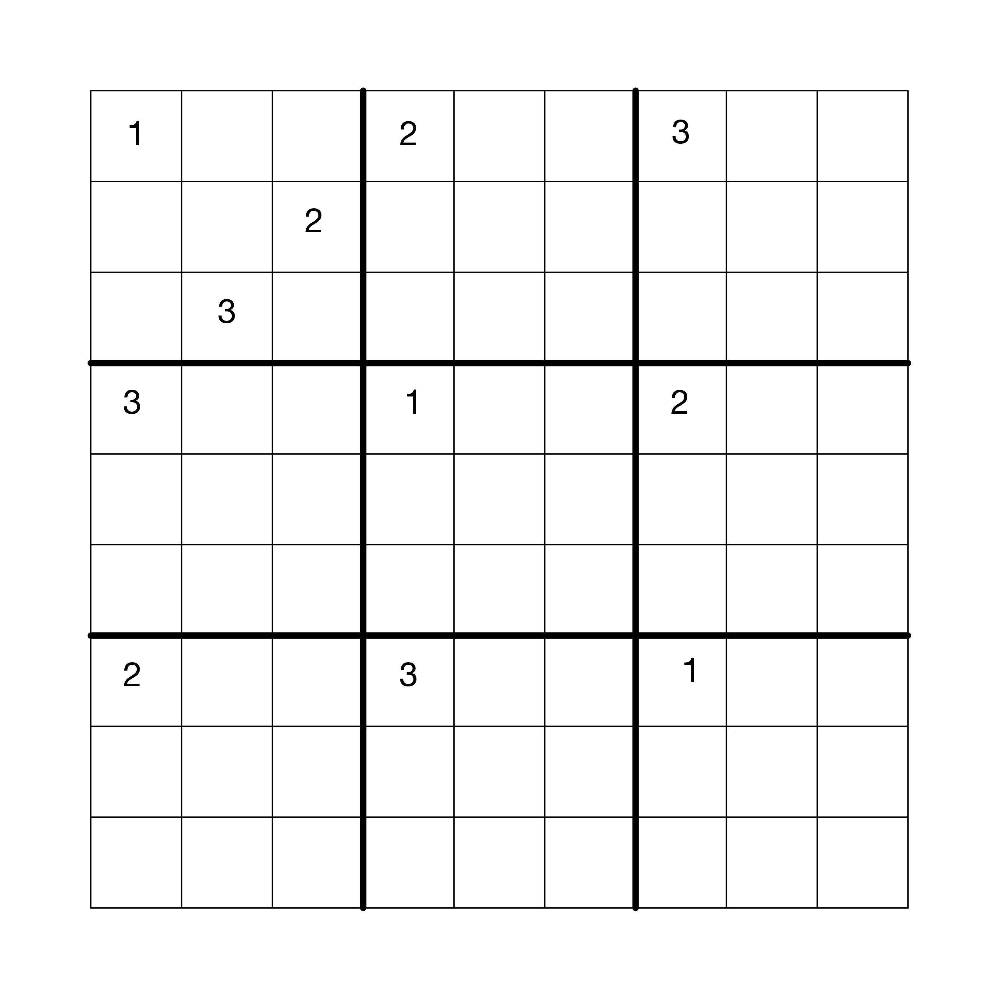
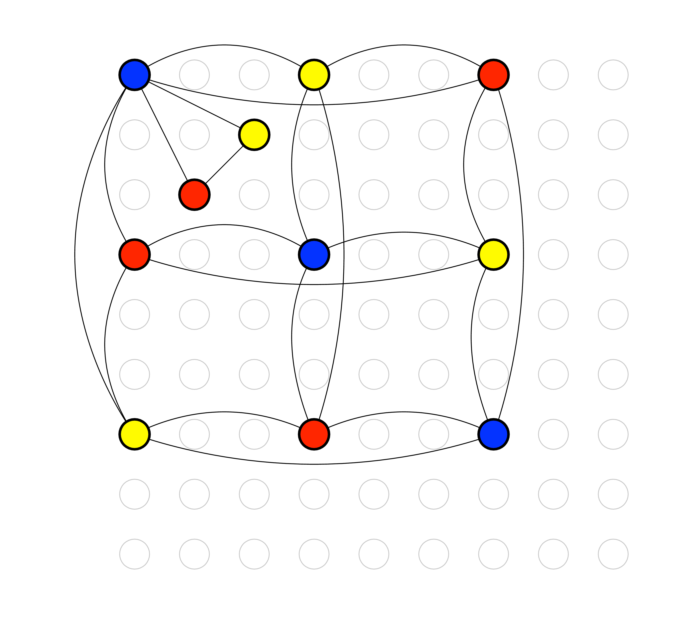
Given that Sudoku is an instance of graph coloring, one can use Sudoku strategies to come up with an algorithm for allocating registers. For example, one of the basic techniques for Sudoku is called Pencil Marks. The idea is that you use a process of elimination to determine what numbers no longer make sense for a square, and write down those numbers in the square (writing very small). For example, if the number 1 is assigned to a square, then by process of elimination, you can write the pencil mark 1 in all the squares in the same row, column, and region. Many Sudoku computer games provide automatic support for Pencil Marks. The Pencil Marks technique corresponds to the notion of color saturation due to ?. The saturation of a vertex, in Sudoku terms, is the set of colors that are no longer available. In graph terminology, we have the following definition:
|
|
where neighbors(u) is the set of vertices that share an edge with u.
Using the Pencil Marks technique leads to a simple strategy for filling in numbers: if there is a square with only one possible number left, then write down that number! But what if there are no squares with only one possibility left? One brute-force approach is to just make a guess. If that guess ultimately leads to a solution, great. If not, backtrack to the guess and make a different guess. One good thing about Pencil Marks is that it reduces the degree of branching in the search tree. Nevertheless, backtracking can be horribly time consuming. One way to reduce the amount of backtracking is to use the most-constrained-first heuristic. That is, when making a guess, always choose a square with the fewest possibilities left (the vertex with the highest saturation). The idea is that choosing highly constrained squares earlier rather than later is better because later there may not be any possibilities.
In some sense, register allocation is easier than Sudoku because we can always cheat and add more numbers by mapping variables to the stack. We say that a variable is spilled when we decide to map it to a stack location. We would like to minimize the time needed to color the graph, and backtracking is expensive. Thus, it makes sense to keep the most-constrained-first heuristic but drop the backtracking in favor of greedy search (guess and just keep going). Figure 3.5 gives the pseudo-code for this simple greedy algorithm for register allocation based on saturation and the most-constrained-first heuristic, which is roughly equivalent to the DSATUR algorithm of ? (also known as saturation degree ordering [??]). Just as in Sudoku, the algorithm represents colors with integers, with the first k colors corresponding to the k registers in a given machine and the rest of the integers corresponding to stack locations.
With this algorithm in hand, let us return to the running example and consider how to color the interference graph in Figure 3.3. We shall not use register rax for register allocation because we use it to patch instructions, so we remove that vertex from the graph. Initially, all of the vertices are not yet colored and they are unsaturated, so we annotate each of them with a dash for their color and an empty set for the saturation.
We select a maximally saturated vertex and color it 0. In this case we have a 7-way tie, so we arbitrarily pick t.1. The then mark color 0 as no longer available for z because it interferes with t.1.
Now we repeat the process, selecting another maximally saturated vertex, which in this case is z. We color z with 1.
The most saturated vertices are now w and y. We color y with the first available color, which is 0.
Vertex w is now the most highly saturated, so we color w with 2.
Now x has the highest saturation, so we color it 1.
In the last step of the algorithm, we color v with 0.
With the coloring complete, we can finalize the assignment of variables to registers and stack locations. Recall that if we have k registers, we map the first k colors to registers and the rest to stack locations. Suppose for the moment that we have just one register to use for register allocation, rcx. Then the following is the mapping of colors to registers and stack allocations.
Putting this mapping together with the above coloring of the variables, we arrive at the assignment:
Applying this assignment to our running example, on the left, yields the program on the right.⇒
The resulting program is almost an x86 program. The remaining step is to apply the patch instructions pass. In this example, the trivial move of -8(%rbp) to itself is deleted and the addition of -16(%rbp) to -8(%rbp) is fixed by going through rax as follows.
An overview of all of the passes involved in register allocation is shown in Figure 3.6.
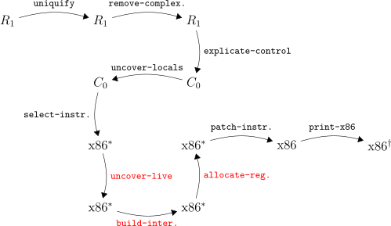
Exercise 12. Implement the pass allocate-registers, which should come after the build-interference pass. The three new passes, uncover-live, build-interference, and allocate-registers replace the assign-homes pass of Section 2.8.
We recommend that you create a helper function named color-graph that takes an interference graph and a list of all the variables in the program. This function should return a mapping of variables to their colors (represented as natural numbers). By creating this helper function, you will be able to reuse it in Chapter 6 when you add support for functions.
Once you have obtained the coloring from color-graph, you can assign the variables to registers or stack locations and then reuse code from the assign-homes pass from Section 2.8 to replace the variables with their assigned location.
Test your updated compiler by creating new example programs that exercise all of the register allocation algorithm, such as forcing variables to be spilled to the stack.
Recall the print-x86 pass generates the prelude and conclusion instructions for the main function. The prelude saved the values in rbp and rsp and the conclusion returned those values to rbp and rsp. The reason for this is that our main function must adhere to the x86 calling conventions that we described in Section 3.1. In addition, the main function needs to restore (in the conclusion) any callee-saved registers that get used during register allocation. The simplest approach is to save and restore all of the callee-saved registers. The more efficient approach is to keep track of which callee-saved registers were used and only save and restore them. Either way, make sure to take this use of stack space into account when you are calculating the size of the frame. Also, don’t forget that the size of the frame needs to be a multiple of 16 bytes.
This section describes an optional enhancement to register allocation for those students who are looking for an extra challenge or who have a deeper interest in register allocation.
We return to the running example, but we remove the supposition that we only have one register to use. So we have the following mapping of color numbers to registers.
Using the same assignment that was produced by register allocator described in the last section, we get the following program.
⇒
While this allocation is quite good, we could do better. For example, the variables v and x ended up in different registers, but if they had been placed in the same register, then the move from v to x could be removed.
We say that two variables p and q are move related if they participate together in a movq instruction, that is, movq p, q or movq q, p. When the register allocator chooses a color for a variable, it should prefer a color that has already been used for a move-related variable (assuming that they do not interfere). Of course, this preference should not override the preference for registers over stack locations, but should only be used as a tie breaker when choosing between registers or when choosing between stack locations.
We recommend that you represent the move relationships in a graph, similar to how we represented interference. The following is the move graph for our running example.
Now we replay the graph coloring, pausing to see the coloring of x and v. So we have the following coloring and the most saturated vertex is x.
Last time we chose to color x with 1, which so happens to be the color of z, and x is move related to z. This was rather lucky, and if the program had been a little different, and say z had been already assigned to 2, then x would still get 1 and our luck would have run out. With move biasing, we use the fact that x and z are move related to influence the choice of color for x, in this case choosing 1 because that’s the color of z.
Next we consider coloring the variable v, and we just need to avoid choosing 2 because of the interference with w. Last time we choose the color 0, simply because it was the lowest, but this time we know that v is move related to x, so we choose the color 1.
We apply this register assignment to the running example, on the left, to obtain the code on right.
⇒
The patch-instructions then removes the trivial moves from v to x and from x to z to obtain the following result.
Exercise 13. Change your implementation of allocate-registers to take move biasing into account. Make sure that your compiler still passes all of the previous tests. Create two new tests that include at least one opportunity for move biasing and visually inspect the output x86 programs to make sure that your move biasing is working properly.
The R0 and R1 languages only had a single kind of value, the integers. In this Chapter we add a second kind of value, the Booleans, to create the R2 language. The Boolean values true and false are written #t and #f respectively in Racket. We also introduce several operations that involve Booleans (and, not, eq?, <, etc.) and the conditional if expression. With the addition of if expressions, programs can have non-trivial control flow which has an impact on several parts of the compiler. Also, because we now have two kinds of values, we need to worry about programs that apply an operation to the wrong kind of value, such as (not 1).
There are two language design options for such situations. One option is to signal an error and the other is to provide a wider interpretation of the operation. The Racket language uses a mixture of these two options, depending on the operation and the kind of value. For example, the result of (not 1) in Racket is #f because Racket treats non-zero integers like #t. On the other hand, (car 1) results in a run-time error in Racket stating that car expects a pair.
The Typed Racket language makes similar design choices as Racket, except much of the error detection happens at compile time instead of run time. Like Racket, Typed Racket accepts and runs (not 1), producing #f. But in the case of (car 1), Typed Racket reports a compile-time error because Typed Racket expects the type of the argument to be of the form (Listof T) or (Pairof T1 T2).
For the R2 language we choose to be more like Typed Racket in that we shall perform type checking during compilation. In Chapter 8 we study the alternative choice, that is, how to compile a dynamically typed language like Racket. The R2 language is a subset of Typed Racket but by no means includes all of Typed Racket. Furthermore, for many of the operations we shall take a narrower interpretation than Typed Racket, for example, rejecting (not 1).
This chapter is organized as follows. We begin by defining the syntax and interpreter for the R2 language (Section 4.1). We then introduce the idea of type checking and build a type checker for R2 (Section 4.2). To compile R2 we need to enlarge the intermediate language C0 into C1, which we do in Section 4.5. The remaining sections of this Chapter discuss how our compiler passes need to change to accommodate Booleans and conditional control flow.
The syntax of the R2 language is defined in Figure 4.1. It includes all of R1 (shown in gray), the Boolean literals #t and #f, and the conditional if expression. Also, we expand the operators to include subtraction, and, or and not, the eq? operations for comparing two integers or two Booleans, and the <, <=, >, and >= operations for comparing integers.
Figure 4.2 defines the interpreter for R2, omitting the parts that are the same as the interpreter for R1 (Figure 2.2). The literals #t and #f simply evaluate to themselves. The conditional expression (ifcnd thn els) evaluates the Boolean expression cnd and then either evaluates thn or els depending on whether cnd produced #t or #f. The logical operations not and and behave as you might expect, but note that the and operation is short-circuiting. That is, given the expression (ande1 e2), the expression e2 is not evaluated if e1 evaluates to #f.
With the addition of the comparison operations, there are quite a few primitive operations and the interpreter code for them is somewhat repetitive. In Figure 4.2 we factor out the different parts into the interp-op function and the similar parts into the one match clause shown in Figure 4.2. We do not use interp-op for the and operation because of the short-circuiting behavior in the order of evaluation of its arguments.
It is helpful to think about type checking in two complementary ways. A type checker predicts the type of value that will be produced by each expression in the program. For R2, we have just two types, Integer and Boolean. So a type checker should predict that
produces an Integer while
produces a Boolean.
As mentioned at the beginning of this chapter, a type checker also rejects programs that apply operators to the wrong type of value. Our type checker for R2 will signal an error for the following expression because, as we have seen above, the expression (+ 10 ...) has type Integer, and we require the argument of a not to have type Boolean.
The type checker for R2 is best implemented as a structurally recursive function over the AST. Figure 4.3 shows many of the clauses for the type-check-exp function. Given an input expression e, the type checker either returns the type (Integer or Boolean) or it signals an error. Of course, the type of an integer literal is Integer and the type of a Boolean literal is Boolean. To handle variables, the type checker, like the interpreter, uses an association list. However, in this case the association list maps variables to types instead of values. Consider the clause for let. We type check the initializing expression to obtain its type T and then associate type T with the variable x. When the type checker encounters the use of a variable, it can find its type in the association list.
Exercise 14. Complete the implementation of type-check-R2 and test it on 10 new example programs in R2 that you choose based on how thoroughly they test the type checking algorithm. Half of the example programs should have a type error, to make sure that your type checker properly rejects them. The other half of the example programs should not have type errors. Your testing should check that the result of the type checker agrees with the value returned by the interpreter, that is, if the type checker returns Integer, then the interpreter should return an integer. Likewise, if the type checker returns Boolean, then the interpreter should return #t or #f. Note that if your type checker does not signal an error for a program, then interpreting that program should not encounter an error. If it does, there is something wrong with your type checker.
The R2 language includes several operators that are easily expressible in terms of other operators. For example, subtraction is expressible in terms of addition and negation.
Several of the comparison operations are expressible in terms of less-than and logical negation.
By performing these translations near the front-end of the compiler, the later passes of the compiler will not need to deal with these constructs, making those passes shorter. On the other hand, sometimes these translations make it more difficult to generate the most efficient code with respect to the number of instructions. However, these differences typically do not affect the number of accesses to memory, which is the primary factor that determines execution time on modern computer architectures.
Exercise 15. Implement the pass shrink that removes subtraction, and, or, <=, >, and >= from the language by translating them to other constructs in R2. Create tests to make sure that the behavior of all of these constructs stays the same after translation.
To implement the new logical operations, the comparison operations, and the if expression, we need to delve further into the x86 language. Figure 4.4 defines the abstract syntax for a larger subset of x86 that includes instructions for logical operations, comparisons, and jumps.
One small challenge is that x86 does not provide an instruction that directly implements logical negation (not in R2 and C1). However, the xorq instruction can be used to encode not. The xorq instruction takes two arguments, performs a pairwise exclusive-or operation on each bit of its arguments, and writes the results into its second argument. Recall the truth table for exclusive-or:
| 0 | 1 | |
| 0 | 0 | 1 |
| 1 | 1 | 0 |
For example, 0011 XOR 0101 = 0110. Notice that in row of the table for the bit 1, the result is the opposite of the second bit. Thus, the not operation can be implemented by xorq with 1 as the first argument: 0001 XOR 0000 = 0001 and 0001 XOR 0001 = 0000.
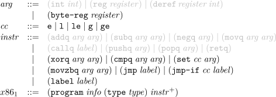
Next we consider the x86 instructions that are relevant for compiling the comparison operations. The cmpq instruction compares its two arguments to determine whether one argument is less than, equal, or greater than the other argument. The cmpq instruction is unusual regarding the order of its arguments and where the result is placed. The argument order is backwards: if you want to test whether x < y, then write cmpq y, x. The result of cmpq is placed in the special EFLAGS register. This register cannot be accessed directly but it can be queried by a number of instructions, including the set instruction. The set instruction puts a 1 or 0 into its destination depending on whether the comparison came out according to the condition code cc (e for equal, l for less, le for less-or-equal, g for greater, ge for greater-or-equal). The set instruction has an annoying quirk in that its destination argument must be single byte register, such as al, which is part of the rax register. Thankfully, the movzbq instruction can then be used to move from a single byte register to a normal 64-bit register.
For compiling the if expression, the x86 instructions for jumping are relevant. The jmp instruction updates the program counter to point to the instruction after the indicated label. The jmp-if instruction updates the program counter to point to the instruction after the indicated label depending on whether the result in the EFLAGS register matches the condition code cc, otherwise the jmp-if instruction falls through to the next instruction. Because the jmp-if instruction relies on the EFLAGS register, it is quite common for the jmp-if to be immediately preceded by a cmpq instruction, to set the EFLAGS register. Our abstract syntax for jmp-if differs from the concrete syntax for x86 to separate the instruction name from the condition code. For example, (jmp-if le foo) corresponds to jle foo.
As with R1, we shall compile R2 to a C-like intermediate language, but we need to grow that intermediate language to handle the new features in R2: Booleans and conditional expressions. Figure 4.5 shows the new features of C1; we add logic and comparison operators to the exp non-terminal, the literals #t and #f to the arg non-terminal. Regarding control flow, C1 differs considerably from R2. Instead of if expressions, C1 has goto’s and conditional goto’s in the grammar for tail. This means that a sequence of statements may now end with a goto or a conditional goto, which jumps to one of two labeled pieces of code depending on the outcome of the comparison. In Section 4.6 we discuss how to translate from R2 to C1, bridging this gap between if expressions and goto’s.
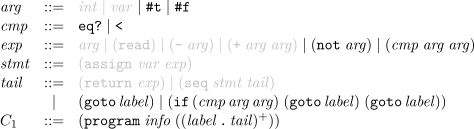
Recall that the purpose of explicate-control is to make the order of evaluation explicit in the syntax of the program. With the addition of if in R2, things get more interesting.
As a motivating example, consider the following program that has an if expression nested in the predicate of another if.
The naive way to compile if and eq? would be to handle each of them in isolation, regardless of their context. Each eq? would be translated into a cmpq instruction followed by a couple instructions to move the result from the EFLAGS register into a general purpose register or stack location. Each if would be translated into the combination of a cmpq and jmp-if. However, if we take context into account we can do better and reduce the use of cmpq and EFLAG-accessing instructions.
One idea is to try and reorganize the code at the level of R2, pushing the outer if inside the inner one. This would yield the following code.
Unfortunately, this approach duplicates the two branches, and a compiler must never duplicate code!
We need a way to perform the above transformation, but without duplicating code. The solution is straightforward if we think at the level of x86 assembly: we can label the code for each of the branches and insert goto’s in all the places that need to execute the branches. Put another way, we need to move away from abstract syntax trees and instead use graphs. In particular, we shall use a standard program representation called a control flow graph (CFG), due to Frances Elizabeth ?. Each vertex is a labeled sequence of code, called a basic block, and each edge represents a jump to another block. The program construct of C0 and C1 represents a control flow graph as an association list mapping labels to basic blocks. Each block is represented by the tail non-terminal.
Figure 4.6 shows the output of the remove-complex-opera* pass and then the explicate-control pass on the example program. We shall walk through the output program and then discuss the algorithm. Following the order of evaluation in the output of remove-complex-opera*, we first have the (read) and comparison to 1 from the predicate of the inner if. In the output of explicate-control, in the start block, this becomes a (read) followed by a conditional goto to either block61 or block62. Each of these contains the translations of the code (eq? (read) 0) and (eq? (read) 1), respectively. Regarding block61, we start with the (read) and comparison to 0 and then have a conditional goto, either to block59 or block60, which indirectly take us to block55 and block56, the two branches of the outer if, i.e., (+ 10 32) and (+ 700 77). The story for block62 is similar.
The nice thing about the output of explicate-control is that there are no unnecessary uses of eq? and every use of eq? is part of a conditional jump. The down-side of this output is that it includes trivial blocks, such as block57 through block60, that only jump to another block. We discuss a solution to this problem in Section 4.11.
Recall that in Section 2.6 we implement the explicate-control pass for R1 using two mutually recursive functions, explicate-control-tail and explicate-control-assign. The former function translated expressions in tail position whereas the later function translated expressions on the right-hand-side of a let. With the addition of if expression in R2 we have a new kind of context to deal with: the predicate position of the if. So we shall need another function, explicate-control-pred, that takes an R2 expression and two pieces of C1 code (two tail’s) for the then-branch and else-branch. The output of explicate-control-pred is a C1 tail. However, these three functions also need to construct the control-flow graph, which we recommend they do via updates to a global variable. Next we consider the specific additions to the tail and assign functions, and some of cases for the pred function.
The explicate-control-tail function needs an additional case for if. The branches of the if inherit the current context, so they are in tail position. Let B1 be the result of explicate-control-tail on the thn branch and B2 be the result of apply explicate-control-tail to the else branch. Then the if translates to the block B3 which is the result of applying explicate-control-pred to the predicate cnd and the blocks B1 and B2.
Next we consider the case for if in the explicate-control-assign function. So the context of the if is an assignment to some variable x and then the control continues to some block B1. The code that we generate for both the thn and els branches shall both need to continue to B1, so we add B1 to the control flow graph with a fresh label ℓ1. Again, the branches of the if inherit the current context, so that are in assignment positions. Let B2 be the result of applying explicate-control-assign to the thn branch, variable x, and the block (goto ℓ1). Let B3 be the result of applying explicate-control-assign to the else branch, variable x, and the block (goto ℓ1). The if translates to the block B4 which is the result of applying explicate-control-pred to the predicate cnd and the blocks B2 and B3.
The function explicate-control-pred will need a case for every expression that can have type Boolean. We detail a few cases here and leave the rest for the reader. The input to this function is an expression and two blocks, B1 and B2, for the branches of the enclosing if. One of the base cases of this function is when the expression is a less-than comparison. We translate it to a conditional goto. We need labels for the two branches B1 and B2, so we add them to the control flow graph and obtain some labels ℓ1 and ℓ2. The translation of the less-than comparison is as follows.
The case for if in explicate-control-pred is particularly illuminating, as it deals with the challenges that we discussed above regarding the example of the nested if expressions. Again, we add the two input branches B1 and B2 to the control flow graph and obtain the labels ℓ1 and ℓ2. The branches thn and els of the current if inherit their context from the current one, i.e., predicate context. So we apply explicate-control-pred to thn with the two blocks (goto ℓ1) and (goto ℓ2), to obtain B3. Similarly for the els branch, to obtain B4. Finally, we apply explicate-control-pred to the predicate cnd and the blocks B3 and B4 to obtain the result B5.
Exercise 16. Implement the pass explicate-code by adding the cases for if to the functions for tail and assignment contexts, and implement the function for predicate contexts. Create test cases that exercise all of the new cases in the code for this pass.
Recall that the select-instructions pass lowers from our C-like intermediate representation to the pseudo-x86 language, which is suitable for conducting register allocation. The pass is implemented using three auxiliary functions, one for each of the non-terminals arg, stmt, and tail.
For arg, we have new cases for the Booleans. We take the usual approach of encoding them as integers, with true as 1 and false as 0.
For stmt, we discuss a couple cases. The not operation can be implemented in terms of xorq as we discussed at the beginning of this section. Given an assignment (assign lhs (not arg)), if the left-hand side lhs is the same as arg, then just the xorq suffices:
Otherwise, a movq is needed to adapt to the update-in-place semantics of x86. Let arg′ be the result of recursively processing arg. Then we have
Next consider the cases for eq? and less-than comparison. Translating
these operations to x86 is slightly involved due to the unusual nature of
the cmpq instruction discussed above. We recommend translating an
assignment from eq? into the following sequence of three instructions.
Regarding the tail non-terminal, we have two new cases, for goto and conditional goto. Both are straightforward to handle. A goto becomes a jump instruction.
A conditional goto becomes a compare instruction followed by a
conditional jump (for “then”) and the fall-through is to a regular jump (for
“else”).
Exercise 17. Expand your select-instructions pass to handle the new features of the R2 language. Test the pass on all the examples you have created and make sure that you have some test programs that use the eq? and < operators, creating some if necessary. Test the output using the interp-x86 interpreter (Appendix 12.1).
The changes required for R2 affect the liveness analysis, building the interference graph, and assigning homes, but the graph coloring algorithm itself does not need to change.
Recall that for R1 we implemented liveness analysis for a single basic block (Section 3.2). With the addition of if expressions to R2, explicate-control now produces many basic blocks arranged in a control-flow graph. The first question we need to consider is in what order should we process the basic blocks? Recall that to perform liveness analysis, we need to know the live-after set. If a basic block has no successor blocks, then it has an empty live-after set and we can immediately apply liveness analysis to it. If a basic block has some successors, then we need to complete liveness analysis on those blocks first. Furthermore, we know that the control flow graph does not contain any cycles (it is a DAG, that is, a directed acyclic graph)1 . What all this amounts to is that we need to process the basic blocks in reverse topological order. We recommend using the tsort and transpose functions of the Racket graph package to obtain this ordering.
The next question is how to compute the live-after set of a block given the live-before sets of all its successor blocks. During compilation we do not know which way the branch will go, so we do not know which of the successor’s live-before set to use. The solution comes from the observation that there is no harm in identifying more variables as live than absolutely necessary. Thus, we can take the union of the live-before sets from all the successors to be the live-after set for the block. Once we have computed the live-after set, we can proceed to perform liveness analysis on the block just as we did in Section 3.2.
The helper functions for computing the variables in an instruction’s argument and for computing the variables read-from (R) or written-to (W) by an instruction need to be updated to handle the new kinds of arguments and instructions in x861.
Many of the new instructions in x861 can be handled in the same way as the instructions in x860. Thus, if your code was already quite general, it will not need to be changed to handle the new instructions. If not, I recommend that you change your code to be more general. The movzbq instruction should be handled like the movq instruction.
Exercise 18. Update the register-allocation pass so that it works for R2 and test your compiler using your previously created programs on the interp-x86 interpreter (Appendix 12.1).
The second argument of the cmpq instruction must not be an immediate value (such as a literal integer). So if you are comparing two immediates, we recommend inserting a movq instruction to put the second argument in rax. The second argument of the movzbq must be a register. There are no special restrictions on the x86 instructions jmp-if, jmp, and label.
Exercise 19. Update patch-instructions to handle the new x86 instructions. Test your compiler using your previously created programs on the interp-x86 interpreter (Appendix 12.1).
Figure 4.7 shows a simple example program in R2 translated to x86, showing the results of explicate-control, select-instructions, and the final x86 assembly code.
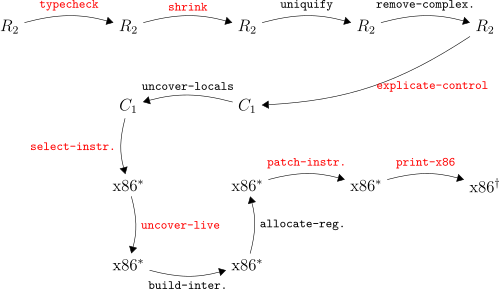
Figure 4.8 lists all the passes needed for the compilation of R2.
UNDER CONSTRUCTION
In this chapter we study the implementation of mutable tuples (called “vectors” in Racket). This language feature is the first to use the computer’s heap because the lifetime of a Racket tuple is indefinite, that is, a tuple lives forever from the programmer’s viewpoint. Of course, from an implementer’s viewpoint, it is important to reclaim the space associated with a tuple when it is no longer needed, which is why we also study garbage collection techniques in this chapter.
Section 5.1 introduces the R3 language including its interpreter and type checker. The R3 language extends the R2 language of Chapter 4 with vectors and Racket’s “void” value. The reason for including the later is that the vector-set! operation returns a value of type Void1 .
Section 5.2 describes a garbage collection algorithm based on copying live objects back and forth between two halves of the heap. The garbage collector requires coordination with the compiler so that it can see all of the root pointers, that is, pointers in registers or on the procedure call stack. Sections 5.3 through 5.8 discuss all the necessary changes and additions to the compiler passes, including a new compiler pass named expose-allocation.
Figure 5.2 defines the syntax for R3, which includes three new forms for creating a tuple, reading an element of a tuple, and writing to an element of a tuple. The program in Figure 5.1 shows the usage of tuples in Racket. We create a 3-tuple t and a 1-tuple. The 1-tuple is stored at index 2 of the 3-tuple, demonstrating that tuples are first-class values. The element at index 1 of t is #t, so the “then” branch is taken. The element at index 0 of t is 40, to which we add the 2, the element at index 0 of the 1-tuple.
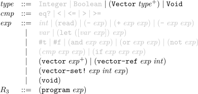
Tuples are our first encounter with heap-allocated data, which raises several interesting issues. First, variable binding performs a shallow-copy when dealing with tuples, which means that different variables can refer to the same tuple, i.e., different variables can be aliases for the same thing. Consider the following example in which both t1 and t2 refer to the same tuple. Thus, the mutation through t2 is visible when referencing the tuple from t1, so the result of this program is 42.
The next issue concerns the lifetime of tuples. Of course, they are created by the vector form, but when does their lifetime end? Notice that the grammar in Figure 5.2 does not include an operation for deleting tuples. Furthermore, the lifetime of a tuple is not tied to any notion of static scoping. For example, the following program returns 3 even though the variable t goes out of scope prior to accessing the vector.
From the perspective of programmer-observable behavior, tuples live forever. Of course, if they really lived forever, then many programs would run out of memory.2 A Racket implementation must therefore perform automatic garbage collection.
Figure 5.3 shows the definitional interpreter for the R3 language. We define the vector, vector-ref, and vector-set! operations for R3 in terms of the corresponding operations in Racket. One subtle point is that the vector-set! operation returns the #<void> value. The #<void> value can be passed around just like other values inside an R3 program, but there are no operations specific to the the #<void> value in R3. In contrast, Racket defines the void? predicate that returns #t when applied to #<void> and #f otherwise.
Figure 5.4 shows the type checker for R3 , which deserves some explanation. As we shall see in Section 5.2, we need to know which variables are pointers into the heap, that is, which variables are vectors. Also, when allocating a vector, we shall need to know which elements of the vector are pointers. We can obtain this information during type checking and when we uncover local variables. The type checker in Figure 5.4 not only computes the type of an expression, it also wraps every sub-expression e with the form (has-type e T), where T is e’s type. Subsequently, in the uncover-locals pass (Section 5.5) this type information is propagated to all variables (including the temporaries generated by remove-complex-opera*).
Here we study a relatively simple algorithm for garbage collection that is the basis of state-of-the-art garbage collectors [??????]. In particular, we describe a two-space copying collector [?] that uses Cheney’s algorithm to perform the copy [?]. Figure 5.5 gives a coarse-grained depiction of what happens in a two-space collector, showing two time steps, prior to garbage collection on the top and after garbage collection on the bottom. In a two-space collector, the heap is divided into two parts, the FromSpace and the ToSpace. Initially, all allocations go to the FromSpace until there is not enough room for the next allocation request. At that point, the garbage collector goes to work to make more room.
The garbage collector must be careful not to reclaim tuples that will be used by the program in the future. Of course, it is impossible in general to predict what a program will do, but we can over approximate the will-be-used tuples by preserving all tuples that could be accessed by any program given the current computer state. A program could access any tuple whose address is in a register or on the procedure call stack. These addresses are called the root set. In addition, a program could access any tuple that is transitively reachable from the root set. Thus, it is safe for the garbage collector to reclaim the tuples that are not reachable in this way.
So the goal of the garbage collector is twofold:
A copying collector accomplishes this by copying all of the live objects from the FromSpace into the ToSpace and then performs a slight of hand, treating the ToSpace as the new FromSpace and the old FromSpace as the new ToSpace. In the example of Figure 5.5, there are three pointers in the root set, one in a register and two on the stack. All of the live objects have been copied to the ToSpace (the right-hand side of Figure 5.5) in a way that preserves the pointer relationships. For example, the pointer in the register still points to a 2-tuple whose first element is a 3-tuple and second element is a 2-tuple. There are four tuples that are not reachable from the root set and therefore do not get copied into the ToSpace. (The situation in Figure 5.5, with a cycle, cannot be created by a well-typed program in R3. However, creating cycles will be possible once we get to R6. We design the garbage collector to deal with cycles to begin with, so we will not need to revisit this issue.)
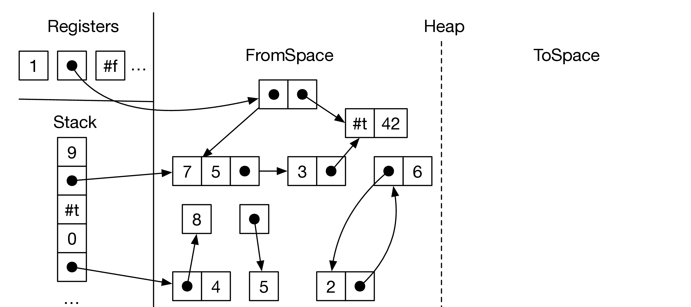
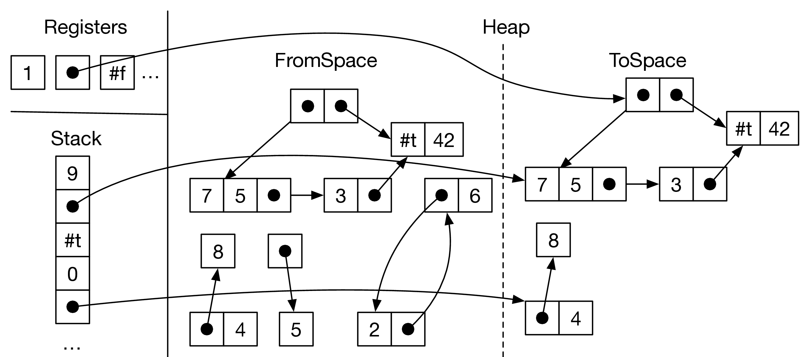
There are many alternatives to copying collectors (and their older siblings, the generational collectors) when its comes to garbage collection, such as mark-and-sweep and reference counting. The strengths of copying collectors are that allocation is fast (just a test and pointer increment), there is no fragmentation, cyclic garbage is collected, and the time complexity of collection only depends on the amount of live data, and not on the amount of garbage [?]. The main disadvantage of two-space copying collectors is that they use a lot of space, though that problem is ameliorated in generational collectors. Racket and Scheme programs tend to allocate many small objects and generate a lot of garbage, so copying and generational collectors are a good fit. Of course, garbage collection is an active research topic, especially concurrent garbage collection [?]. Researchers are continuously developing new techniques and revisiting old trade-offs [?????].
Let us take a closer look at how the copy works. The allocated objects and pointers can be viewed as a graph and we need to copy the part of the graph that is reachable from the root set. To make sure we copy all of the reachable vertices in the graph, we need an exhaustive graph traversal algorithm, such as depth-first search or breadth-first search [??]. Recall that such algorithms take into account the possibility of cycles by marking which vertices have already been visited, so as to ensure termination of the algorithm. These search algorithms also use a data structure such as a stack or queue as a to-do list to keep track of the vertices that need to be visited. We shall use breadth-first search and a trick due to ? for simultaneously representing the queue and copying tuples into the ToSpace.
Figure 5.6 shows several snapshots of the ToSpace as the copy progresses. The queue is represented by a chunk of contiguous memory at the beginning of the ToSpace, using two pointers to track the front and the back of the queue. The algorithm starts by copying all tuples that are immediately reachable from the root set into the ToSpace to form the initial queue. When we copy a tuple, we mark the old tuple to indicate that it has been visited. (We discuss the marking in Section 5.2.2.) Note that any pointers inside the copied tuples in the queue still point back to the FromSpace. Once the initial queue has been created, the algorithm enters a loop in which it repeatedly processes the tuple at the front of the queue and pops it off the queue. To process a tuple, the algorithm copies all the tuple that are directly reachable from it to the ToSpace, placing them at the back of the queue. The algorithm then updates the pointers in the popped tuple so they point to the newly copied tuples. Getting back to Figure 5.6, in the first step we copy the tuple whose second element is 42 to the back of the queue. The other pointer goes to a tuple that has already been copied, so we do not need to copy it again, but we do need to update the pointer to the new location. This can be accomplished by storing a forwarding pointer to the new location in the old tuple, back when we initially copied the tuple into the ToSpace. This completes one step of the algorithm. The algorithm continues in this way until the front of the queue is empty, that is, until the front catches up with the back.
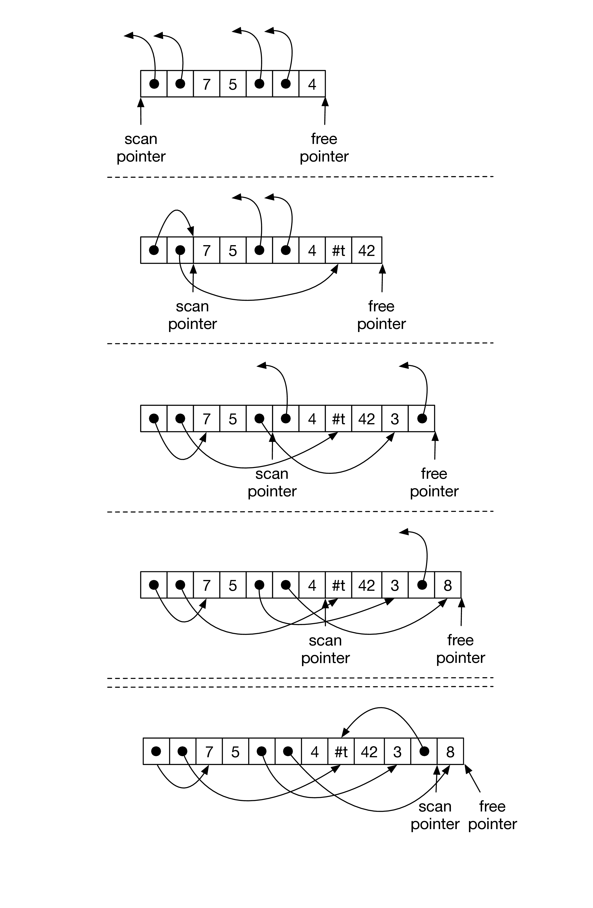
The garbage collector places some requirements on the data representations used by our compiler. First, the garbage collector needs to distinguish between pointers and other kinds of data. There are several ways to accomplish this.
Dynamically typed languages, such as Lisp, need to tag objects anyways, so option 1 is a natural choice for those languages. However, R3 is a statically typed language, so it would be unfortunate to require tags on every object, especially small and pervasive objects like integers and Booleans. Option 3 is the best-performing choice for statically typed languages, but comes with a relatively high implementation complexity. To keep this chapter to a 2-week time budget, we recommend a combination of options 1 and 2, with separate strategies used for the stack and the heap.
Regarding the stack, we recommend using a separate stack for pointers [???], which we call a root stack (a.k.a. “shadow stack”). That is, when a local variable needs to be spilled and is of type (Vector type1…typen), then we put it on the root stack instead of the normal procedure call stack. Furthermore, we always spill vector-typed variables if they are live during a call to the collector, thereby ensuring that no pointers are in registers during a collection. Figure 5.7 reproduces the example from Figure 5.5 and contrasts it with the data layout using a root stack. The root stack contains the two pointers from the regular stack and also the pointer in the second register.
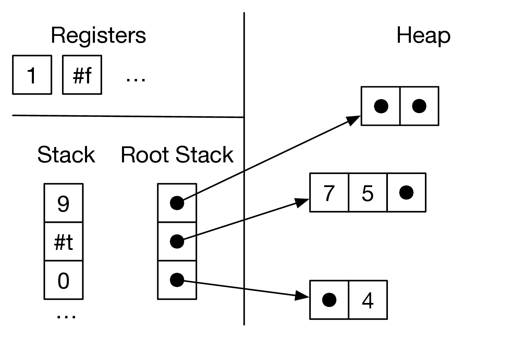
The problem of distinguishing between pointers and other kinds of data also arises inside of each tuple. We solve this problem by attaching a tag, an extra 64-bits, to each tuple. Figure 5.8 zooms in on the tags for two of the tuples in the example from Figure 5.5. Note that we have drawn the bits in a big-endian way, from right-to-left, with bit location 0 (the least significant bit) on the far right, which corresponds to the directional of the x86 shifting instructions salq (shift left) and sarq (shift right). Part of each tag is dedicated to specifying which elements of the tuple are pointers, the part labeled “pointer mask”. Within the pointer mask, a 1 bit indicates there is a pointer and a 0 bit indicates some other kind of data. The pointer mask starts at bit location 7. We have limited tuples to a maximum size of 50 elements, so we just need 50 bits for the pointer mask. The tag also contains two other pieces of information. The length of the tuple (number of elements) is stored in bits location 1 through 6. Finally, the bit at location 0 indicates whether the tuple has yet to be copied to the ToSpace. If the bit has value 1, then this tuple has not yet been copied. If the bit has value 0 then the entire tag is in fact a forwarding pointer. (The lower 3 bits of an pointer are always zero anyways because our tuples are 8-byte aligned.)
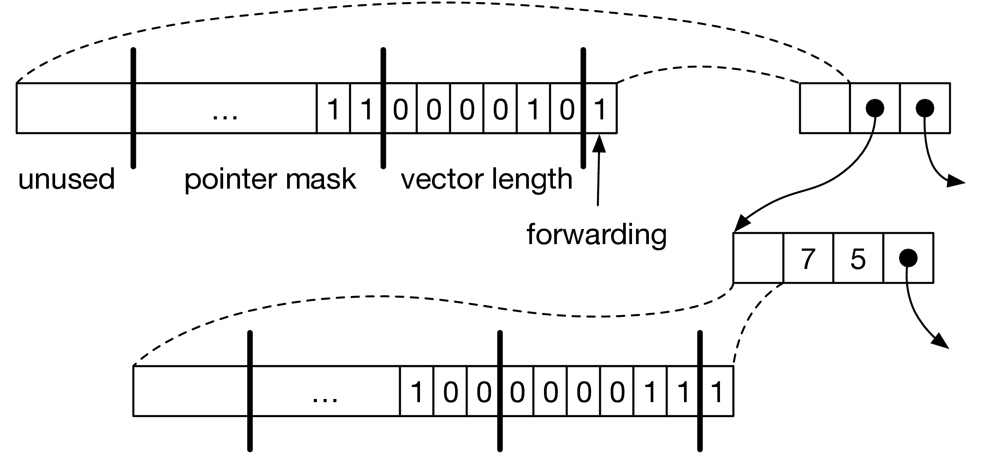
The implementation of the garbage collector needs to do a lot of bit-level data manipulation and we need to link it with our compiler-generated x86 code. Thus, we recommend implementing the garbage collector in C [?] and putting the code in the runtime.c file. Figure 5.9 shows the interface to the garbage collector. The initialize function creates the FromSpace, ToSpace, and root stack. The initialize function is meant to be called near the beginning of main, before the rest of the program executes. The initialize function puts the address of the beginning of the FromSpace into the global variable free_ptr. The global fromspace_end points to the address that is 1-past the last element of the FromSpace. (We use half-open intervals to represent chunks of memory [?].) The rootstack_begin global points to the first element of the root stack.
As long as there is room left in the FromSpace, your generated code can allocate tuples simply by moving the free_ptr forward. The amount of room left in FromSpace is the difference between the fromspace_end and the free_ptr. The collect function should be called when there is not enough room left in the FromSpace for the next allocation. The collect function takes a pointer to the current top of the root stack (one past the last item that was pushed) and the number of bytes that need to be allocated. The collect function performs the copying collection and leaves the heap in a state such that the next allocation will succeed.
Exercise 20. In the file runtime.c you will find the implementation of initialize and a partial implementation of collect. The collect function calls another function, cheney, to perform the actual copy, and that function is left to the reader to implement. The following is the prototype for cheney.
The parameter rootstack_ptr is a pointer to the top of the rootstack (which is an array of pointers). The cheney function also communicates with collect through the global variables fromspace_begin and fromspace_end mentioned in Figure 5.9 as well as the pointers for the ToSpace:
The job of the cheney function is to copy all the live objects (reachable from the root stack) into the ToSpace, update free_ptr to point to the next unused spot in the ToSpace, update the root stack so that it points to the objects in the ToSpace, and finally to swap the global pointers for the FromSpace and ToSpace.
The introduction of garbage collection has a non-trivial impact on our compiler passes. We introduce one new compiler pass called expose-allocation and make non-trivial changes to type-check, flatten, select-instructions, allocate-registers, and print-x86. The following program will serve as our running example. It creates two tuples, one nested inside the other. Both tuples have length one. The example then accesses the element in the inner tuple tuple via two vector references.
Next we proceed to discuss the new expose-allocation pass.
The pass expose-allocation lowers the vector creation form into a conditional call to the collector followed by the allocation. We choose to place the expose-allocation pass before flatten because expose-allocation introduces new variables, which can be done locally with let, but let is gone after flatten. In the following, we show the transformation for the vector form into let-bindings for the initializing expressions, by a conditional collect, an allocate, and the initialization of the vector. (The len is the length of the vector and bytes is how many total bytes need to be allocated for the vector, which is 8 for the tag plus len times 8.)
(In the above, we suppressed all of the has-type forms in the output for the sake of readability.) The placement of the initializing expressions e0,…,en−1 prior to the allocate and the sequence of vector-set!’s is important, as those expressions may trigger garbage collection and we do not want an allocated but uninitialized tuple to be present during a garbage collection.
The output of expose-allocation is a language that extends R3 with the three new forms that we use above in the translation of vector.
Figure 5.10 shows the output of the expose-allocation pass on our running example.
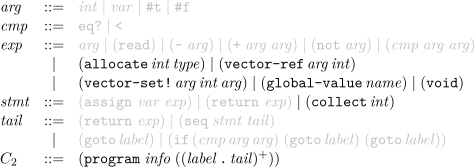
The output of explicate-control is a program in the intermediate language C2, whose syntax is defined in Figure 5.11. The new forms of C2 include the allocate, vector-ref, and vector-set!, and global-value expressions and the collect statement. The explicate-control pass can treat these new forms much like the other forms.
Recall that the uncover-locals function collects all of the local variables so that it can store them in the info field of the program form. Also recall that we need to know the types of all the local variables for purposes of identifying the root set for the garbage collector. Thus, we change uncover-locals to collect not just the variables, but the variables and their types in the form of an association list. Thanks to the has-type forms, the types are readily available. Figure 5.12 lists the output of the uncover-locals pass on the running example.
In this pass we generate x86 code for most of the new operations that were needed to compile tuples, including allocate, collect, vector-ref, vector-set!, and (void). We postpone global-value to print-x86.
The vector-ref and vector-set! forms translate into movq instructions with the appropriate deref. (The plus one is to get past the tag at the beginning of the tuple representation.)
The vec′ and arg′ are obtained by recursively processing vec and arg. The move of vec′ to register r11 ensures that offsets are only performed with register operands. This requires removing r11 from consideration by the register allocating.
We compile the allocate form to operations on the free_ptr, as shown below. The address in the free_ptr is the next free address in the FromSpace, so we move it into the lhs and then move it forward by enough space for the tuple being allocated, which is 8(len + 1) bytes because each element is 8 bytes (64 bits) and we use 8 bytes for the tag. Last but not least, we initialize the tag. Refer to Figure 5.8 to see how the tag is organized. We recommend using the Racket operations bitwise-ior and arithmetic-shift to compute the tag. The type annotation in the vector form is used to determine the pointer mask region of the tag.
The collect form is compiled to a call to the collect function in the runtime. The arguments to collect are the top of the root stack and the number of bytes that need to be allocated. We shall use a dedicated register, r15, to store the pointer to the top of the root stack. So r15 is not available for use by the register allocator.
The syntax of the x862 language is defined in Figure 5.13. It differs from x861 just in the addition of the form for global variables. Figure 5.14 shows the output of the select-instructions pass on the running example.
As discussed earlier in this chapter, the garbage collector needs to access all the pointers in the root set, that is, all variables that are vectors. It will be the responsibility of the register allocator to make sure that:
The later responsibility can be handled during construction of the inference graph, by adding interference edges between the call-live vector-typed variables and all the callee-saved registers. (They already interfere with the caller-saved registers.) The type information for variables is in the program form, so we recommend adding another parameter to the build-interference function to communicate this association list.
The spilling of vector-typed variables to the root stack can be handled after graph coloring, when choosing how to assign the colors (integers) to registers and stack locations. The program output of this pass changes to also record the number of spills to the root stack.
Figure 5.15 shows the output of the print-x86 pass on the running example. In the prelude and conclusion of the main function, we treat the root stack very much like the regular stack in that we move the root stack pointer (r15) to make room for all of the spills to the root stack, except that the root stack grows up instead of down. For the running example, there was just one spill so we increment r15 by 8 bytes. In the conclusion we decrement r15 by 8 bytes.
One issue that deserves special care is that there may be a call to collect prior to the initializing assignments for all the variables in the root stack. We do not want the garbage collector to accidentally think that some uninitialized variable is a pointer that needs to be followed. Thus, we zero-out all locations on the root stack in the prelude of main. In Figure 5.15, the instruction movq $0, (%r15) accomplishes this task. The garbage collector tests each root to see if it is null prior to dereferencing it.
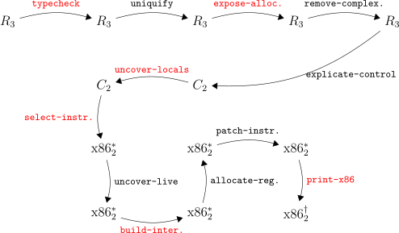
Figure 5.16 gives an overview of all the passes needed for the compilation of R3.
This chapter studies the compilation of functions at the level of abstraction of the C language. This corresponds to a subset of Typed Racket in which only top-level function definitions are allowed. These kind of functions are an important stepping stone to implementing lexically-scoped functions in the form of lambda abstractions, which is the topic of Chapter 7.
The syntax for function definitions and function application is shown in Figure 6.1, where we define the R4 language. Programs in R4 start with zero or more function definitions. The function names from these definitions are in-scope for the entire program, including all other function definitions (so the ordering of function definitions does not matter). The syntax for function application does not include an explicit keyword, which is error prone when using match. To alleviate this problem, we change the syntax from (exp exp∗) to (app exp exp∗) during type checking.
Functions are first-class in the sense that a function pointer is data and can be stored in memory or passed as a parameter to another function. Thus, we introduce a function type, written
for a function whose n parameters have the types type1 through typen and whose return type is typer. The main limitation of these functions (with respect to Racket functions) is that they are not lexically scoped. That is, the only external entities that can be referenced from inside a function body are other globally-defined functions. The syntax of R4 prevents functions from being nested inside each other.
![type ::= Integer | Boolean | (Vector type+ ) | Void | (type∗-> type)
cmp ::= eq? | < | <= | > | >=
exp ::= int | (read) | (-exp ) | (+ exp exp) | (-exp exp)
| var | (let ([var exp ]) exp)
| #t | #f | (and exp exp) | (or exp exp) | (not exp)
| (cmp exp exp+) | (if exp exp exp)
| (vector exp ) | (vector-ref exp int)
| (vector-set! exp int exp) | (void)
| (exp exp∗)
def ::= (define (var [var:type]∗):type exp )
R4 ::= (program info def∗ exp )](book61x.svg)
The program in Figure 6.2 is a representative example of defining and using functions in R4. We define a function map-vec that applies some other function f to both elements of a vector (a 2-tuple) and returns a new vector containing the results. We also define a function add1 that does what its name suggests. The program then applies map-vec to add1 and (vector 0 41). The result is (vector 1 42), from which we return the 42.
The definitional interpreter for R4 is in Figure 6.3. The case for the program form is responsible for setting up the mutual recursion between the top-level function definitions. We use the classic back-patching approach that uses mutable variables and makes two passes over the function definitions [?]. In the first pass we set up the top-level environment using a mutable cons cell for each function definition. Note that the lambda value for each function is incomplete; it does not yet include the environment. Once the top-level environment is constructed, we then iterate over it and update the lambda value’s to use the top-level environment.
The x86 architecture provides a few features to support the implementation of functions. We have already seen that x86 provides labels so that one can refer to the location of an instruction, as is needed for jump instructions. Labels can also be used to mark the beginning of the instructions for a function. Going further, we can obtain the address of a label by using the leaq instruction and rip-relative addressing. For example, the following puts the address of the add1 label into the rbx register.
In Section 2.2 we saw the use of the callq instruction for jumping to a function whose location is given by a label. Here we instead will be jumping to a function whose location is given by an address, that is, we need to make an indirect function call. The x86 syntax is to give the register name prefixed with an asterisk.
The callq instruction provides partial support for implementing functions, but it does not handle (1) parameter passing, (2) saving and restoring frames on the procedure call stack, or (3) determining how registers are shared by different functions. These issues require coordination between the caller and the callee, which is often assembly code written by different programmers or generated by different compilers. As a result, people have developed conventions that govern how functions calls are performed. Here we shall use the same conventions used by the gcc compiler [?].
Regarding (1) parameter passing, the convention is to use the following six registers: rdi, rsi, rdx, rcx, r8, and r9, in that order. If there are more than six arguments, then the convention is to use space on the frame of the caller for the rest of the arguments. However, to ease the implementation of efficient tail calls (Section 6.2.2), we shall arrange to never have more than six arguments. The register rax is for the return value of the function.
Regarding (2) frames and the procedure call stack, the convention is that the stack grows down, with each function call using a chunk of space called a frame. The caller sets the stack pointer, register rsp, to the last data item in its frame. The callee must not change anything in the caller’s frame, that is, anything that is at or above the stack pointer. The callee is free to use locations that are below the stack pointer.
Regarding (3) the sharing of registers between different functions, recall from Section 3.1 that the registers are divided into two groups, the caller-saved registers and the callee-saved registers. The caller should assume that all the caller-saved registers get overwritten with arbitrary values by the callee. Thus, the caller should either 1) not put values that are live across a call in caller-saved registers, or 2) save and restore values that are live across calls. We shall recommend option 1). On the flip side, if the callee wants to use a callee-saved register, the callee must save the contents of those registers on their stack frame and then put them back prior to returning to the caller. The base pointer, register rbp, is used as a point-of-reference within a frame, so that each local variable can be accessed at a fixed offset from the base pointer. Figure 6.4 shows the layout of the caller and callee frames.
| Caller View | Callee View | Contents | Frame |
| 8(%rbp) | return address |
Caller |
|
| 0(%rbp) | old rbp | ||
| -8(%rbp) | callee-saved 1 | ||
| … | … | ||
| −8j(%rbp) | callee-saved j | ||
| −8(j + 1)(%rbp) | local 1 | ||
| … | … | ||
| −8(j + k)(%rbp) | local k | ||
| 8(%rbp) | return address |
Callee |
|
| 0(%rbp) | old rbp | ||
| -8(%rbp) | callee-saved 1 | ||
| … | … | ||
| −8n(%rbp) | callee-saved n | ||
| −8(n + 1)(%rbp) | local 1 | ||
| … | … | ||
| −8(n + m)(%rsp) | local m | ||
In general, the amount of stack space used by a program is determined by the longest chain of nested function calls. That is, if function f1 calls f2, f2 calls f3, …, and fn−1 calls fn, then the amount of stack space is bounded by O(n). The depth n can grow quite large in the case of recursive or mutually recursive functions. However, in some cases we can arrange to use only constant space, i.e. O(1), instead of O(n).
If a function call is the last action in a function body, then that call is said to be a tail call. In such situations, the frame of the caller is no longer needed, so we can pop the caller’s frame before making the tail call. With this approach, a recursive function that only makes tail calls will only use O(1) stack space. Functional languages like Racket typically rely heavily on recursive functions, so they typically guarantee that all tail calls will be optimized in this way.
However, some care is needed with regards to argument passing in tail calls. As mentioned above, for arguments beyond the sixth, the convention is to use space in the caller’s frame for passing arguments. But here we’ve popped the caller’s frame and can no longer use it. Another alternative is to use space in the callee’s frame for passing arguments. However, this option is also problematic because the caller and callee’s frame overlap in memory. As we begin to copy the arguments from their sources in the caller’s frame, the target locations in the callee’s frame might overlap with the sources for later arguments! We solve this problem by not using the stack for parameter passing but instead use the heap, as we describe in the Section 6.5.
As mentioned above, for a tail call we pop the caller’s frame prior to making the tail call. The instructions for popping a frame are the instructions that we usually place in the conclusion of a function. Thus, we also need to place such code immediately before each tail call. These instructions include restoring the callee-saved registers, so it is good that the argument passing registers are all caller-saved registers.
One last note regarding which instruction to use to make the tail call. When the callee is finished, it should not return to the current function, but it should return to the function that called the current one. Thus, the return address that is already on the stack is the right one, and we should not use callq to make the tail call, as that would unnecessarily overwrite the return address. Instead we can simply use the jmp instruction. Like the indirect function call, we write an indirect jump with a register prefixed with an asterisk. We recommend using rax to hold the jump target because the preceding “conclusion” overwrites just about everything else.
The shrink pass performs a couple minor modifications to the grammar to ease the later passes. This pass adds an empty info field to each function definition:
and introduces an explicit main function.
mainDef
is
Going forward, the syntax of R4 is inconvenient for purposes of compilation because it conflates the use of function names and local variables. This is a problem because we need to compile the use of a function name differently than the use of a local variable; we need to use leaq to convert the function name (a label in x86) to an address in a register. Thus, it is a good idea to create a new pass that changes function references from just a symbol f to (fun-ref f). A good name for this pass is reveal-functions and the output language, F1, is defined in Figure 6.5.
![type ::= Integer | Boolean | (Vector type+ ) | Void | (type∗-> type)
exp ::= int | (read) | (-exp) | (+ exp exp)
| var | (let ([var exp ]) exp)
| #t | #f | (not exp) | (cmp exp exp) | (if exp exp exp)
+
| (vector exp ) | (vector -ref exp int) ∗
| (vector-set! exp int exp) | (void ) | (app exp exp )
| (fun-ref label)
def ::= (define (label [var:type]∗):type exp)
F1 ::= (program info def∗)](book62x.svg)
Placing this pass after uniquify is a good idea, because it will make sure that there are no local variables and functions that share the same name. On the other hand, reveal-functions needs to come before the explicate-control pass because that pass will help us compile fun-ref into assignment statements.
This pass transforms functions so that they have at most six parameters and transforms all function calls so that they pass at most six arguments. A simple strategy for imposing an argument limit of length n is to take all arguments i where i ≥ n and pack them into a vector, making that subsequent vector the nth argument.
In the body of the function, all occurrences of the ith argument in which i > 5 must be replaced with a vector-ref.
The primary decisions to make for this pass is whether to classify fun-ref and app as either simple or complex expressions. Recall that a simple expression will eventually end up as just an “immediate” argument of an x86 instruction. Function application will be translated to a sequence of instructions, so app must be classified as complex expression. Regarding fun-ref, as discussed above, the function label needs to be converted to an address using the leaq instruction. Thus, even though fun-ref seems rather simple, it needs to be classified as a complex expression so that we generate an assignment statement with a left-hand side that can serve as the target of the leaq.
Figure 6.6 defines the syntax for C3, the output of explicate-control. The three mutually recursive functions for this pass, for assignment, tail, and predicate contexts, must all be updated with cases for fun-ref and app. In assignment and predicate contexts, app becomes call, whereas in tail position app becomes tailcall. We recommend defining a new function for processing function definitions. This code is similar to the case for program in R3. The top-level explicate-control function that handles the program form of R4 can then apply this new function to all the function definitions.
![arg ::= int | var | #t | #f
cmp ::= eq? | <
exp ::= arg | (read) | (- arg) | (+ arg arg) | (not arg ) | (cmp arg arg)
| (allocate inttype) | (vector -refarg int)
| (vector -set!arg int arg ) | (gl∗obal- valuename ) | (void)
| (fun-ref label) | (call argarg )
stmt ::= (assign var exp) | (return exp) | (collect int)
tail ::= (return exp) | (seq stmt tail)
| (goto label) | (if (cmp arg arg) (goto label) (goto label))
| (tailcall argarg∗)
def ::= (define (label [var:type]∗):type ((label .tail)+ ))
C ::= (program info def∗)
3](book63x.svg)
The function for processing tail should be updated with a case for tailcall. We also recommend creating a new function for processing function definitions. Each function definition in C3 has its own set of local variables, so the code for function definitions should be similar to the case for the program form in C2.
The output of select instructions is a program in the x863 language, whose syntax is defined in Figure 6.7.
![arg ::= (int int) | (reg register) | (deref register int)
| (byte -reg register ) | (global- value name )
| (fun -ref label)
cc ::= e | l | le | g | ge
instr ::= (addq arg arg) | (subq arg arg) | (negq arg) | (movq arg arg)
| (callq label) | (pushq arg) | (popq arg) | (retq )
| (xorq arg arg) | (cmpq arg arg) | (setcc arg )
| (movzbq arg arg) | (jmp label) | (jcc label) | (label label)
| (indirect -callq arg) | (tail-jmp arg)
| (leaq arg arg)
block ::= (block info instr+)
def ::= (define (label) info ((label . block)+))
∗
x863 ::= (program info def )](book64x.svg)
An assignment of fun-ref becomes a leaq instruction as follows:
Regarding function definitions, we need to remove their parameters and instead perform parameter passing in terms of the conventions discussed in Section 6.2. That is, the arguments will be in the argument passing registers, and inside the function we should generate a movq instruction for each parameter, to move the argument value from the appropriate register to a new local variable with the same name as the old parameter.
Next, consider the compilation of function calls, which have the following form upon input to select-instructions.
In the mirror image of handling the parameters of function definitions, the arguments args need to be moved to the argument passing registers. Once the instructions for parameter passing have been generated, the function call itself can be performed with an indirect function call, for which I recommend creating the new instruction indirect-callq. Of course, the return value from the function is stored in rax, so it needs to be moved into the lhs.
Regarding tail calls, the parameter passing is the same as non-tail calls: generate instructions to move the arguments into to the argument passing registers. After that we need to pop the frame from the procedure call stack. However, we do not yet know how big the frame is; that gets determined during register allocation. So instead of generating those instructions here, we invent a new instruction that means “pop the frame and then do an indirect jump”, which we name tail-jmp.
Recall that in Section 2.6 we recommended using the label start for the initial block of a program, and in Section 2.7 we recommended labeling the conclusion of the program with conclusion, so that (return arg) can be compiled to an assignment to rax followed by a jump to conclusion. With the addition of function definitions, we will have a starting block and conclusion for each function, but their labels need to be unique. We recommend prepending the function’s name to start and conclusion, respectively, to obtain unique labels. (Alternatively, one could gensym labels for the start and conclusion and store them in the info field of the function definition.)
Inside uncover-live, when computing the W set (written variables) for an indirect-callq instruction, we recommend including all the caller-saved registers, which will have the affect of making sure that no caller-saved register actually needs to be saved.
With the addition of function definitions, we compute an interference graph for each function (not just one for the whole program).
Recall that in Section 5.7 we discussed the need to spill vector-typed variables that are live during a call to the collect. With the addition of functions to our language, we need to revisit this issue. Many functions will perform allocation and therefore have calls to the collector inside of them. Thus, we should not only spill a vector-typed variable when it is live during a call to collect, but we should spill the variable if it is live during any function call. Thus, in the build-interference pass, we recommend adding interference edges between call-live vector-typed variables and the callee-saved registers (in addition to the usual addition of edges between call-live variables and the caller-saved registers).
In patch-instructions, you should deal with the x86 idiosyncrasy that the destination argument of leaq must be a register. Additionally, you should ensure that the argument of tail-jmp is rax, our reserved register—this is to make code generation more convenient, because we will be trampling many registers before the tail call (as explained below).
For the print-x86 pass, we recommend the following translations:
Handling tail-jmp requires a bit more care. A straightforward translation of tail-jmp would be jmp *arg, which is what we will want to do, but before the jump we need to pop the current frame. So we need to restore the state of the registers to the point they were at when the current function was called. This sequence of instructions is the same as the code for the conclusion of a function.
Note that your print-x86 pass needs to add the code for saving and restoring callee-saved registers, if you have not already implemented that. This is necessary when generating code for function definitions.
Figure 6.8 shows an example translation of a simple function in R4 to x86. The figure also includes the results of the explicate-control and select-instructions passes. We have omitted the has-type AST nodes for readability. Can you see any ways to improve the translation?
Exercise 21. Expand your compiler to handle R4 as outlined in this chapter. Create 5 new programs that use functions, including examples that pass functions and return functions from other functions and including recursive functions. Test your compiler on these new programs and all of your previously created test programs.
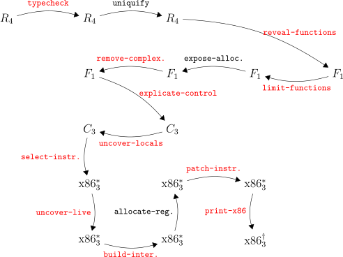
Figure 6.9 gives an overview of the passes needed for the compilation of R4.
This chapter studies lexically scoped functions as they appear in functional languages such as Racket. By lexical scoping we mean that a function’s body may refer to variables whose binding site is outside of the function, in an enclosing scope. Consider the example in Figure 7.1 featuring an anonymous function defined using the lambda form. The body of the lambda, refers to three variables: x, y, and z. The binding sites for x and y are outside of the lambda. Variable y is bound by the enclosing let and x is a parameter of f. The lambda is returned from the function f. Below the definition of f, we have two calls to f with different arguments for x, first 5 then 3. The functions returned from f are bound to variables g and h. Even though these two functions were created by the same lambda, they are really different functions because they use different values for x. Finally, we apply g to 11 (producing 20) and apply h to 15 (producing 22) so the result of this program is 42.
The syntax for this language with anonymous functions and lexical scoping, R5, is defined in Figure 7.2. It adds the lambda form to the grammar for R4, which already has syntax for function application. In this chapter we shall describe how to compile R5 back into R4, compiling lexically-scoped functions into a combination of functions (as in R4) and tuples (as in R3).
![type ::= Integer | Boolean | (Vector type+ ) | Void | (type∗-> type)
exp ::= int | (read) | (-exp) | (+ exp exp) | (- exp exp)
| var | (let ([var exp ]) exp)
| #t | #f | (and exp exp) | (or exp exp) | (not exp)
| (eq? exp exp)+ | (if exp exp exp)
| (vector exp ) | (vector -ref exp int)
| (vector-set! exp int exp) | (void )
| (exp exp∗)
| (lambda: ([var:type]∗):type exp)
def ::= (define (var [var:type]∗):type exp)
R5 ::= (program def∗ exp)](book66x.svg)
To compile lexically-scoped functions to top-level function definitions, the compiler will need to provide special treatment to variable occurrences such as x and y in the body of the lambda of Figure 7.1, for the functions of R4 may not refer to variables defined outside the function. To identify such variable occurrences, we review the standard notion of free variable.
Definition 22. A variable is free with respect to an expression e if the variable occurs inside e but does not have an enclosing binding in e.
For example, the variables x, y, and z are all free with respect to the expression (+ x (+ y z)). On the other hand, only x and y are free with respect to the following expression because z is bound by the lambda.
Once we have identified the free variables of a lambda, we need to arrange for some way to transport, at runtime, the values of those variables from the point where the lambda was created to the point where the lambda is applied. Referring again to Figure 7.1, the binding of x to 5 needs to be used in the application of g to 11, but the binding of x to 3 needs to be used in the application of h to 15. An efficient solution to the problem, due to ?, is to bundle into a vector the values of the free variables together with the function pointer for the lambda’s code, an arrangement called a flat closure (which we shorten to just “closure”) . Fortunately, we have all the ingredients to make closures, Chapter 5 gave us vectors and Chapter 6 gave us function pointers. The function pointer shall reside at index 0 and the values for free variables will fill in the rest of the vector. Figure 7.3 depicts the two closures created by the two calls to f in Figure 7.1. Because the two closures came from the same lambda, they share the same function pointer but differ in the values for the free variable x.
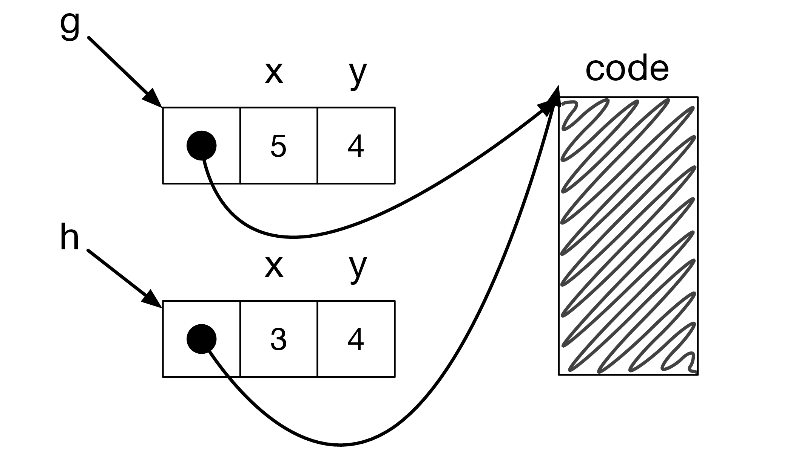
Figure 7.4 shows the definitional interpreter for R5. The clause for lambda saves the current environment inside the returned lambda. Then the clause for app uses the environment from the lambda, the lam-env, when interpreting the body of the lambda. The lam-env environment is extended with the mapping of parameters to argument values.
Figure 7.5 shows how to type check the new lambda form. The body of the lambda is checked in an environment that includes the current environment (because it is lexically scoped) and also includes the lambda’s parameters. We require the body’s type to match the declared return type.
The compiling of lexically-scoped functions into top-level function definitions is accomplished in the pass convert-to-closures that comes after reveal-functions and before limit-functions.
As usual, we shall implement the pass as a recursive function over the AST. All of the action is in the clauses for lambda and app. We transform a lambda expression into an expression that creates a closure, that is, creates a vector whose first element is a function pointer and the rest of the elements are the free variables of the lambda. The name is a unique symbol generated to identify the function.
lambda
into avector
, we must create a top-level function definition for eachlambda
, as shown below.clos
parameter refers to the closure. Theps
parameters are the normal parameters of thelambda
. The typesfvts
are the types of the free variables in the lambda and the underscore is a dummy type because it is rather difficult to give a type to the function in the closure’s type, and it does not matter. The sequence oflet
forms bind the free variables to their values obtained from the closure.We transform function application into code that retrieves the function pointer from the closure and then calls the function, passing in the closure as the first argument. We bind e′ to a temporary variable to avoid code duplication.
There is also the question of what to do with top-level function definitions. To maintain a uniform translation of function application, we turn function references into closures.
Figure 7.6 shows the result of closure conversion for the example program demonstrating lexical scoping that we discussed at the beginning of this chapter.
⇓
⇓
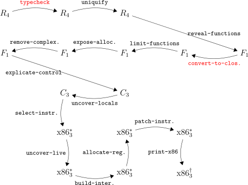
Figure 7.7 provides an overview of all the passes needed for the compilation of R5.
Exercise 23. Expand your compiler to handle R5 as outlined in this chapter. Create 5 new programs that use lambda functions and make use of lexical scoping. Test your compiler on these new programs and all of your previously created test programs.
In this chapter we discuss the compilation of a dynamically typed language, named R7, that is a subset of the Racket language. (Recall that in the previous chapters we have studied subsets of the Typed Racket language.) In dynamically typed languages, an expression may produce values of differing type. Consider the following example with a conditional expression that may return a Boolean or an integer depending on the input to the program.
Languages that allow expressions to produce different kinds of values are called polymorphic. There are many kinds of polymorphism, such as subtype polymorphism and parametric polymorphism [?]. The kind of polymorphism are talking about here does not have a special name, but it is the usual kind that arises in dynamically typed languages.
Another characteristic of dynamically typed languages is that primitive operations, such as not, are often defined to operate on many different types of values. In fact, in Racket, the not operator produces a result for any kind of value: given #f it returns #t and given anything else it returns #f. Furthermore, even when primitive operations restrict their inputs to values of a certain type, this restriction is enforced at runtime instead of during compilation. For example, the following vector reference results in a run-time contract violation.
![cmp ::= eq? | < | <= | > | >=
exp ::= int | (read) | (- exp) | (+ exp exp) | (- exp exp)
| var | (let ([var exp]) exp)
| #t | #f | (and exp exp ) | (or exp exp) | (not exp )
| (cmp exp exp+) | (ifexp exp exp)
| (vector exp ) | (vector -ref exp exp)
| (vector -set! exp exp exp) | (void )
| (exp exp∗) | (lambda (var∗) exp)
| (boolean? exp ) | (integer? exp)
| (vector? exp) | (procedure? exp) | (void? exp)
def ::= (define (var var∗) exp)
∗
R7 ::= (program def exp)](book68x.svg)
The syntax of R7, our subset of Racket, is defined in Figure 8.1. The definitional interpreter for R7 is given in Figure 8.2.
Let us consider how we might compile R7 to x86, thinking about the first example above. Our bit-level representation of the Boolean #f is zero and similarly for the integer 0. However, (not #f) should produce #t whereas (not 0) should produce #f. Furthermore, the behavior of not, in general, cannot be determined at compile time, but depends on the runtime type of its input, as in the example above that depends on the result of (read).
The way around this problem is to include information about a value’s runtime type in the value itself, so that this information can be inspected by operators such as not. In particular, we shall steal the 3 right-most bits from our 64-bit values to encode the runtime type. We shall use 001 to identify integers, 100 for Booleans, 010 for vectors, 011 for procedures, and 101 for the void value. We shall refer to these 3 bits as the tag and we define the following auxiliary function.
| tagof (Integer) | = 001 | ||
| tagof (Boolean) | = 100 | ||
| tagof ((Vector…)) | = 010 | ||
| tagof ((Vectorof…)) | = 010 | ||
| tagof ((…->…)) | = 011 | ||
| tagof (Void) | = 101 |
(We shall say more about the new Vectorof type shortly.) This stealing of 3 bits comes at some price: our integers are reduced to ranging from −260 to 260. The stealing does not adversely affect vectors and procedures because those values are addresses, and our addresses are 8-byte aligned so the rightmost 3 bits are unused, they are always 000. Thus, we do not lose information by overwriting the rightmost 3 bits with the tag and we can simply zero-out the tag to recover the original address.
In some sense, these tagged values are a new kind of value. Indeed, we can extend our typed language with tagged values by adding a new type to classify them, called Any, and with operations for creating and using tagged values, yielding the R6 language that we define in Section 8.1. The R6 language provides the fundamental support for polymorphism and runtime types that we need to support dynamic typing.
There is an interesting interaction between tagged values and garbage collection. A variable of type Any might refer to a vector and therefore it might be a root that needs to be inspected and copied during garbage collection. Thus, we need to treat variables of type Any in a similar way to variables of type Vector for purposes of register allocation, which we discuss in Section 8.4. One concern is that, if a variable of type Any is spilled, it must be spilled to the root stack. But this means that the garbage collector needs to be able to differentiate between (1) plain old pointers to tuples, (2) a tagged value that points to a tuple, and (3) a tagged value that is not a tuple. We enable this differentiation by choosing not to use the tag 000. Instead, that bit pattern is reserved for identifying plain old pointers to tuples. On the other hand, if one of the first three bits is set, then we have a tagged value, and inspecting the tag can differentiation between vectors (010) and the other kinds of values.
We shall implement our untyped language R7 by compiling it to R6 (Section 8.5), but first we describe the how to extend our compiler to handle the new features of R6 (Sections 8.2, 8.3, and 8.4).
![type ::= Integer | Boolean | (Vector type+) | (Vectorof type) | Void
| (type∗-> type) | Any
ftype ::= Integer | Boolean | Void | (Vectorof Any ) | (Vector Any ∗)
| (Any ∗-> Any)
cmp ::= eq? | < | <= | > | >=
exp ::= int | (read) | (- exp) | (+ exp exp) | (- exp exp)
| var | (let ([var exp]) exp)
| #t | #f | (and exp exp ) | (or exp exp) | (not exp)
| (cmp exp exp) | (ifexp exp exp)
| (vector exp+ ) | (vector -ref exp int)
| (vector -set! exp int exp) | (void)
| (exp exp∗) | (lambda: ([var:type]∗):type exp)
| (inject exp ftype) | (project exp ftype)
| (boolean? exp ) | (integer? exp)
| (vector? exp ) | (procedure? exp) | (void? exp)
def ::= (define (var [var:type]∗):type exp)
R6 ::= (program def∗ exp)](book69x.svg)
The syntax of R6 is defined in Figure 8.3. The (inject e T) form converts the value produced by expression e of type T into a tagged value. The (project e T) form converts the tagged value produced by expression e into a value of type T or else halts the program if the type tag is equivalent to T. We treat (Vectorof Any) as equivalent to (Vector Any …).
Note that in both inject and project, the type T is restricted to the flat types ftype, which simplifies the implementation and corresponds with what is needed for compiling untyped Racket. The type predicates, (boolean?e) etc., expect a tagged value and return #t if the tag corresponds to the predicate, and return #t otherwise. Selections from the type checker for R6 are shown in Figure 8.4 and the interpreter for R6 is in Figure 8.5.
In the shrink pass we recommend compiling project into an explicit if expression that uses three new operations: tag-of-any, value-of-any, and exit. The tag-of-any operation retrieves the type tag from a tagged value of type Any. The value-of-any retrieves the underlying value from a tagged value. Finally, the exit operation ends the execution of the program by invoking the operating system’s exit function. So the translation for project is as follows. (We have omitted the has-type AST nodes to make this output more readable.)
Similarly, we recommend translating the type predicates (boolean?, etc.) into uses of tag-of-any and eq?.
Inject
We recommend compiling an inject as follows if the type is Integer or
Boolean. The salq instruction shifts the destination to the left by the number of
bits specified its source argument (in this case 3, the length of the tag) and it
preserves the sign of the integer. We use the orq instruction to combine the tag
and the value to form the tagged value.
orq
.Tag of Any Recall that the tag-of-any operation extracts the type tag from a value of type Any. The type tag is the bottom three bits, so we obtain the tag by taking the bitwise-and of the value with 111 (7 in decimal).
Value of Any
Like inject, the instructions for value-of-any are different depending on
whether the type T is a pointer (vector or procedure) or not (Integer or
Boolean). The following shows the instruction selection for Integer and
Boolean. We produce an untagged value by shifting it to the right by 3 bits.
…
0111
(7
in decimal) and applybitwise-not
to obtain…
1000
which wemovq
into the destinationlhs
. We then generateandq
with the tagged value to get the desired result.
As mentioned above, a variable of type Any might refer to a vector. Thus, the register allocator for R6 needs to treat variable of type Any in the same way that it treats variables of type Vector for purposes of garbage collection. In particular,
Exercise 24. Expand your compiler to handle R6 as discussed in the last few sections. Create 5 new programs that use the Any type and the new operations (inject, project, boolean?, etc.). Test your compiler on these new programs and all of your previously created test programs.
Figure 8.6 shows the compilation of many of the R7 forms into R6. An important invariant of this pass is that given a subexpression e of R7, the pass will produce an expression e′ of R6 that has type Any. For example, the first row in Figure 8.6 shows the compilation of the Boolean #t, which must be injected to produce an expression of type Any. The second row of Figure 8.6, the compilation of addition, is representative of compilation for many operations: the arguments have type Any and must be projected to Integer before the addition can be performed.
The compilation of lambda (third row of Figure 8.6) shows what happens when we need to produce type annotations: we simply use Any. The compilation of if and eq? demonstrate how this pass has to account for some differences in behavior between R7 and R6. The R7 language is more permissive than R6 regarding what kind of values can be used in various places. For example, the condition of an if does not have to be a Boolean. For eq?, the arguments need not be of the same type (but in that case, the result will be #f).
Exercise 25. Expand your compiler to handle R7 as outlined in this chapter. Create tests for R7 by adapting all of your previous test programs by removing type annotations. Add 5 more tests programs that specifically rely on the language being dynamically typed. That is, they should not be legal programs in a statically typed language, but nevertheless, they should be valid R7 programs that run to completion without error.
This chapter will be based on the ideas of ?.
This chapter may be based on ideas from ?, ?, ?, or ?.
This chapter will present a procedure inlining pass based on the algorithm of ?.
We provide several interpreters in the interp.rkt file. The interp-scheme function takes an AST in one of the Racket-like languages considered in this book (R1,R2,…) and interprets the program, returning the result value. The interp-C function interprets an AST for a program in one of the C-like languages (C0,C1,…), and the interp-x86 function interprets an AST for an x86 program.
The utility function described in this section can be found in the utilities.rkt file.
The read-program function takes a file path and parses that file (it must be a Racket program) into an abstract syntax tree (as an S-expression) with a program AST at the top.
The assert function displays the error message msg if the Boolean bool is false.
The lookup function takes a key and an association list (a list of key-value pairs), and returns the first value that is associated with the given key, if there is one. If not, an error is triggered. The association list may contain both immutable pairs (built with cons) and mutable pairs (built with mcons).
The map2 function ...
The interp-tests function takes a compiler name (a string), a description of the passes, an interpreter for the source language, a test family name (a string), and a list of test numbers, and runs the compiler passes and the interpreters to check whether the passes correct. The description of the passes is a list with one entry per pass. An entry is a list with three things: a string giving the name of the pass, the function that implements the pass (a translator from AST to AST), and a function that implements the interpreter (a function from AST to result value) for the language of the output of the pass. The interpreters from Appendix 12.1 make a good choice. The interp-tests function assumes that the subdirectory tests has a collection of Scheme programs whose names all start with the family name, followed by an underscore and then the test number, ending in .scm. Also, for each Scheme program there is a file with the same number except that it ends with .in that provides the input for the Scheme program.
The compiler-tests function takes a compiler name (a string) a description of the passes (as described above for interp-tests), a test family name (a string), and a list of test numbers (see the comment for interp-tests), and runs the compiler to generate x86 (a .s file) and then runs gcc to generate machine code. It runs the machine code and checks that the output is 42.
The compile-file function takes a description of the compiler passes (see the comment for interp-tests) and returns a function that, given a program file name (a string ending in .scm), applies all of the passes and writes the output to a file whose name is the same as the program file name but with .scm replaced with .s.
Table 12.1 lists some x86 instructions and what they do. We write A → B to mean that the value of A is written into location B. Address offsets are given in bytes. The instruction arguments A,B,C can be immediate constants (such as $4), registers (such as %rax), or memory references (such as −4(%ebp)). Most x86 instructions only allow at most one memory reference per instruction. Other operands must be immediates or registers.
| Instruction | Operation |
| addq A, B | A + B → B |
| negq A | −A → A |
| subq A, B | B − A → B |
| callq L | Pushes the return address and jumps to label L |
| callq *A | Calls the function at the address A. |
| retq | Pops the return address and jumps to it |
| popq A | ∗rsp → A;rsp + 8 →rsp |
| pushq A | rsp− 8 → rsp;A →∗rsp |
| leaq A,B | A → B (C must be a register) |
| cmpq A, B | compare A and B and set the flag register |
| je L |
Jump
to
label
L
if
the
flag
register
matches
the
condition
code
of
the
instruction,
otherwise
go
to
the
next
instructions.
The
condition
codes
are
e
for
“equal”,
l
for
“less”,
le
for
“less
or
equal”,
g
for
“greater”,
and
ge
for
“greater
or
equal”. |
| jl L | |
| jle L | |
| jg L | |
| jge L | |
| jmp L | Jump to label L |
| movq A, B | A → B |
| movzbq A, B |
A → B,
where
A
is
a
single-byte
register
(e.g.,
al
or
cl),
B
is
a
8-byte
register,
and
the
extra
bytes
of
B
are
set
to
zero. |
| notq A | ∼ A → A (bitwise complement) |
| orq A, B | A|B → B (bitwise-or) |
| andq A, B | A&B → B (bitwise-and) |
| salq A, B | B « A → B (arithmetic shift left, where A is a constant) |
| sarq A, B | B » A → B (arithmetic shift right, where A is a constant) |
| sete A |
If
the
flag
matches
the
condition
code,
then
1 → A,
else
0 → A.
Refer
to
je
above
for
the
description
of
the
condition
codes.
A
must
be
a
single
byte
register
(e.g.,
al
or
cl). |
| setl A | |
| setle A | |
| setg A | |
| setge A |